Quyết Định 6Giá Trị Bản Thân
10 Điều quan trọng hàng đầu bạn cần biết về Giá trị bản thân…
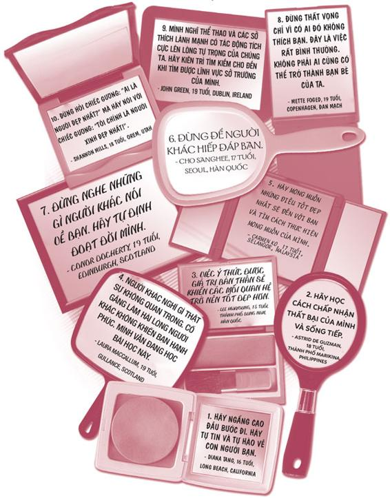
Nỗi sợ lớn nhất của chúng ta không phải là việc chúng ta thua kém người khác. Chính việc phải thể hiện tài năng, bản lĩnh của bản thân cho mọi người mới khiến chúng ta sợ hãi nhất. Chúng ta tự hỏi: “Mình là ai mà đòi thông minh, xinh đẹp, tài năng và xuất chúng chứ?”. Chứ bạn là ai mà lại không được như thế?
- Marianne Williamson
Tiểu thuyết gia, nhà báo Chuck Palahniuk từng nói: “Gậy và đá chỉ có thể làm bạn gãy xương, nhưng những lời nói ác ý có thể nghiền nát bạn”. Quả thật như vậy. Những lời ác ý có thể khiến bạn tổn thương sâu sắc. Ngoài ra, có nhiều thứ khác cũng có thể làm bạn suy sụp, chẳng hạn như việc thi trượt hay cha mẹ ly hôn. Việc xây dựng lòng tự trọng mạnh mẽ chắc chắn không phải chuyện dễ dàng.
Vậy lòng tự trọng ở đây có nghĩa là gì? Lòng tự trọng chính là quan điểm của bạn về bản thân. Lòng tự trọng có thể được gọi bằng những cái tên khác, chẳng hạn như “hình tượng bản thân”, “lòng tự tin”, “sự tôn trọng bản thân”. Riêng tôi, tôi thích dùng cụm từ “giá trị bản thân” vì tôi cho rằng cụm từ này nói lên được những điều mà các cụm từ khác không thể.
Mặc dù bạn có thể xem trọng hay nhẹ giá trị của bản thân
CHÂN GIÁ TRỊ CỦA BẠN KHÔNG BAO GIỜ THAY ĐỔI.
Thế thì bạn đáng giá bao nhiêu nào? Nhiều hơn mức bạn có thể tưởng tượng đấy. Như một câu ngạn ngữ của người Do Thái: “Tất cả chúng ta đều cực giỏi theo cách này hay cách khác”.
Bạn sẽ làm gì với giá trị bản thân chính là quyết định quan trọng cuối cùng bạn phải đưa ra khi còn ở tuổi teen. Để chọn con đường đúng đắn, bạn cần phải thấy được phiên bản tốt đẹp nhất của mình, xây dựng được phẩm chất và năng lực đồng thời học cách yêu thương bản thân, bao gồm cả những khiếm khuyết mình gặp phải. Đương nhiên, bạn hoàn toàn có quyền lựa chọn con đường sai lầm bằng cách sống bám víu vào quan điểm của người khác, không chịu làm gì để cải thiện bản thân và phán xét quá mức những điểm không hoàn hảo của mình.
Việc bạn có nhận thức đúng đắn về giá trị bản thân không có nghĩa là bạn tự mãn, mà đơn giản là bạn tự tin và cảm thấy hài lòng với con người mình.
Ý thức được giá trị bản thân có thể giúp bạn:
• Đứng vững trước áp lực bạn bè
• Thử những điều mới mẻ và làm quen thêm nhiều bạn mới
• Vượt qua nỗi thất vọng, những sai lầm và thất bại
• Cảm thấy mình được yêu thương và được chào đón
Ngược lại, nếu không nhận thức đúng về giá trị bản thân, có thể bạn sẽ:
• Đầu hàng trước áp lực bạn bè
• Không dám thử những điều mới lạ
• Gục ngã khi gặp khó khăn
• Cảm thấy mình không được thương yêu và chào đón
Maxwell Maltz đã nói: “Sống với lòng tự trọng thấp cũng giống như bươn chải trong cuộc sống với đôi tay bị khóa chặt”. Tin vui là bất kể hôm nay bạn nghĩ gì về bản thân, bạn vẫn có thể nhận thức đúng đắn hơn về giá trị của bản thân mình đơn giản bằng cách suy nghĩ và hành động khác đi một chút. Việc này không hề phức tạp hay khó khăn như một cuộc phẫu thuật não đâu, đừng lo lắng.

ĐÁNH GIÁ TỔNG THỂ GIÁ TRỊ BẢN THÂN
Hãy làm bài kiểm tra sau đây để xem tình hình hiện tại của bạn thế nào nhé.
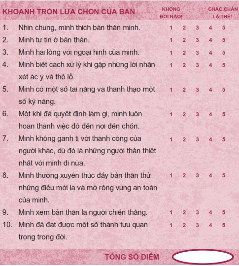
Từ 40 - 50 điểm: Bạn đang đi trên con đường đúng đắn. Hãy cứ phát huy nhé!
Từ 30 - 39 điểm: Bạn đang bước song song trên cả hai con đường. Hãy bước hẳn sang con đường đúng đắn nhé!
Từ 10 - 29 điểm: Bạn đang đi trên con đường sai lầm. Hãy đặc biệt chú ý đến chương này.
Thực tế, phần lớn các bạn trẻ, thậm chí là những bạn có vẻ cực kỳ tự tin đi nữa, đều sẽ có lúc phải vật lộn với giá trị bản thân theo một cách nào đó. Chương này gồm ba phần. Trong phần Chiếc gương xã hội và chiếc gương sự thật , chúng ta sẽ bàn xem tại sao việc để bản thân bị ám ảnh bởi quan điểm của người khác là không khôn ngoan chút nào. Phần Phẩm chất và năng lực sẽ chỉ cho bạn một phương pháp thiết thực để xây dựng giá trị bản thân. Cuối cùng, phần Chinh phục gã El Guapo trong bạn! sẽ đi sâu vào cách xử lý những muộn phiền trong cuộc sống thường nhật - những điều có thể dễ dàng khiến chúng ta khổ sở, chán nản.
Chiếc gương xã hội và chiếc gương sự thật
Đã bao giờ bạn vào Nhà cười, nơi có những chiếc gương “kỳ quái” chưa? Chúng ta buồn cười khi nhìn vào gương và thấy bản thân chỉ cao có sáu mươi xăng-ti-mét hay thấy gương mặt và cơ thể chúng ta bị méo mó hoặc kéo dài ra. Chúng ta cười vì biết những hình ảnh này không phải sự thật. Câu hỏi được đặt ra ở đây là: Khi nhìn nhận bản thân, bạn đang nhìn vào chiếc gương nào, chiếc gương kỳ quái hay chiếc gương sự thật?
Bạn thấy đấy, có hai chiếc gương để bạn lựa chọn. Tôi gọi chiếc gương đầu tiên là chiếc gương xã hội , còn chiếc còn lại là chiếc gương sự thật . Chiếc gương xã hội chính là chiếc gương phản chiếu cách người khác nhìn nhận về bạn. Còn chiếc gương sự thật chính là chiếc gương phản chiếu con người thật của bạn.
Hình ảnh trong chiếc gương xã hội được xây dựng dựa trên sự so sánh bạn với người khác. Khi soi chiếc gương này, bạn thường có kiểu suy nghĩ như: “Trông mình đẹp hơn cô ấy” hoặc “Anh ta thông minh hơn mình”. Trái lại, hình ảnh trong chiếc gương sự thật được xây dựng dựa trên tiềm năng và phiên bản tốt đẹp nhất của bạn.
Chiếc gương xã hội là chiếc gương ở bên ngoài bản thân bạn, chẳng hạn như trong mắt người khác, trong lời đánh giá của người khác, trên các phương tiện truyền thông. Thế nên, nếu soi chiếc gương này, bạn phải nhìn ra ngoài bản thân để biết mình là ai. Ngược lại, chiếc gương sự thật nằm bên trong chính bạn - bạn nhìn chính mình để biết mình là ai.
Hãy thử nghĩ xem chuyện gì sẽ xảy ra nếu những gì bạn nghĩ về bản thân lại đến từ chiếc gương xã hội - hình ảnh phản chiếu cách người khác nhìn nhận bạn. Khi đó, bạn sẽ bắt đầu nghĩ rằng hình ảnh phản chiếu ấy chính là bạn. Hình ảnh ấy trở thành cái mác của bạn và bạn trở nên quen thuộc với nó. Bạn quên mất việc bạn đang nhìn vào một chiếc gương ma thuật.
Nếu muốn biết mình đang soi chiếc gương nào khi nhìn nhận bản thân, bạn hãy thực hiện thử nghiệm sau đây. Trong chiếc gương xã hội, hãy viết ra những gì bạn bè, thầy cô, gia đình, hàng xóm, v.v. mô tả về bạn.
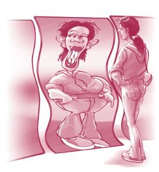
Trong chiếc gương sự thật, hãy viết ra những gì bạn cảm nhận về con người thật của mình. Con người thật của bạn tương ứng với phiên bản tốt đẹp nhất và những tiềm năng của bạn. Hãy nghĩ xem những người hoàn toàn tin tưởng bạn, chẳng hạn như cha mẹ và ông bà, sẽ trả lời câu hỏi này thế nào.
Keli’i, một nữ sinh mười bảy tuổi đang học lớp Mười Hai, đã hoàn thành cuộc thử nghiệm với kết quả như sau:
Bạn hãy tự mình làm thử nghiệm với hai chiếc gương này nhé.
Giờ hãy nhìn vào hai danh sách trên và tự hỏi: Những gì mình nghĩ về bản thân giống với hình ảnh trong chiếc gương nào - chiếc gương xã hội hay chiếc gương sự thật? Nếu bạn giống với hầu hết các bạn trẻ (và cả người lớn nữa), những gì bạn nghĩ về bản thân sẽ giống với hình ảnh từ chiếc gương xã hội nhiều hơn là hình ảnh từ chiếc gương sự thật. Nói cách khác, quan điểm của bạn về bản thân được hình thành từ quan điểm của người khác.
Trong một số trường hợp, người khác cũng có thể nhìn thấy những điểm tốt đẹp nhất ở bạn và hình ảnh trong chiếc gương xã hội cũng không khác gì hình ảnh trong chiếc gương sự thật. Nếu quả thật như vậy, bạn thật may mắn! Thế nhưng, trong hầu hết các trường hợp, quan điểm của chúng ta về bản thân chịu sự tác động rất lớn từ cách người khác đánh giá chúng ta trong khi lại chịu rất ít tác động từ con người thật của chúng ta.
NHỮNG VẾT NỨT TRÊN CHIẾC GƯƠNG XÃ HỘI
Chúng ta không nên nhìn vào chiếc gương xã hội vì một số nguyên nhân sau:
Chiếc gương xã hội phi thực tế . Bằng một cách nào đó, giới truyền thông đã bán cho mọi người lời nói dối rằng ngoại hình là tất cả . Và chúng ta đã chấp nhận lời nói dối này! Nền văn hóa của chúng ta tuyên bố rằng nếu bạn xinh đẹp, mảnh khảnh hay rám nắng, bạn sẽ có được tất cả - sự nổi tiếng, bạn trai/bạn gái, thành công và hạnh phúc. Nhà văn Nga Leo Tolstoy đã nói: “Suy nghĩ đẹp là tốt chính là một ảo tưởng hoàn hảo đến mức đáng kinh ngạc”. Vấn đề nằm ở chỗ chúng ta thường muốn bản thân giống với những người mẫu hoàn hảo phi thực tế trong các bộ phim và các tờ tạp chí.
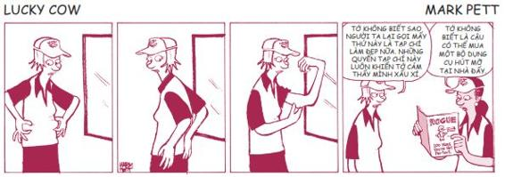
Nhà văn Georgia Beaverson phát biểu:
Truyền hình và các phương tiện truyền thông nói chung đã đặt các bạn trẻ vào thế kẹt giữa một tảng đá và một vùng đất tàn bạo. Thế điều gì tạo nên tảng đá? Chính là những người đàn ông bóng bẩy, những phụ nữ có vẻ ngoài hoàn hảo, các vận động viên gần như không bao giờ thua cuộc. Quần áo, tiền bạc, thành công và tình dục là tên những trận đấu mà những người này tham gia. Thế còn vùng đất tàn bạo còn lại là gì? Chỉ một từ thôi - thực tế!
Ngày nay, “chuẩn mực” về hình thể lý tưởng ở nữ giới ngày càng trở nên gầy và gầy hơn. Các cô gái bị vây quanh bởi những người mẫu nhí gầy gò tầm mười hai, mười ba tuổi nhưng lại ăn mặc như phụ nữ trưởng thành. Người ta ước tính chỉ có khoảng 5% phụ nữ có tạng người mảnh mai và cao ráo như các cô người mẫu. Thế nhưng, đó lại chính là dáng người mà mọi cô gái đều mong muốn và có vẻ là dáng người duy nhất được xã hội chấp nhận. Trong khi đó, các bạn trai thì bị oanh tạc bởi hình ảnh những anh chàng ăn mặc sành điệu, có cơ bắp cuồn cuộn và làn da rám nắng.
Sức ảnh hưởng của truyền thông mạnh đến nỗi chúng ta bắt đầu nghĩ mình phải trông như một nàng búp bê Barbie thì mới được xem là hấp dẫn, nhưng liệu có ai được như thế không? Hãy xem phân tích sau đây về “chuẩn lý tưởng” của búp bê Barbie nhé:
Nếu Barbie là người thật, cô ấy sẽ cao 1,75 mét, có chiếc cổ cao gấp đôi cổ người bình thường và nặng 41 kí-lô-gam, chỉ đạt 76% chỉ tiêu so với mức cân nặng phù hợp với tạng người của cô ấy. Các số đo của cô ấy là 96 - 46 - 81 và cô ấy sẽ có bàn chân quá nhỏ, không đủ sức để nâng đỡ cơ thể khi cô ấy bước đi.
Tương tự như vậy, các chàng trai trẻ được cho là phải có cơ bắp cuồn cuộn khắp cơ thể giống như mô hình các nhân vật trong bộ phim Biệt đội GI Joe. Nếu GI Joe là người thật, anh ta sẽ có bộ ngực lớn đến 1,4 mét và có cơ bắp tay to đến 69 xăng-ti-mét. Nói cách khác, bắp tay của anh ta sẽ to gần bằng eo và to hơn bắp tay của bất kỳ vận động viên thể hình chuyên nghiệp nào.
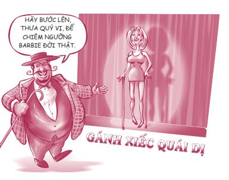
Thật nực cười! Thảo nào chúng ta luôn cảm thấy mình thua kém khi so sánh bản thân với những người mẫu trên các tạp chí hay trên tivi. Nhà văn Todd Hertz đã hỏi: “Vẻ ngoài hoàn hảo, mái tóc hoàn hảo, cốt truyện hoàn hảo, kết cục hoàn hảo. Liệu các ngôi sao Hollywood tuổi teen kia có giống chút nào với con người thật của bạn không?”. Tôi nghĩ là không đâu.
Chiếc gương xã hội luôn luôn thay đổi. Nếu nhận thức của bạn về bản thân bắt nguồn từ cách người khác nhìn nhận về bạn, bạn sẽ không bao giờ cảm thấy vững vàng bởi vì các quan điểm, các xu hướng nhất thời và thời trang là những thứ luôn luôn thay đổi. Thật khó để đuổi kịp những thứ này. Rồi bạn sẽ bắt đầu cảm thấy như Alice ở Xứ sở thần tiên.
Sâu bướm hỏi: “Thế cô là ai?”. Alice ngượng ngùng đáp: “Giờ tôi cũng chẳng biết nữa, thưa ông. Hồi sáng này khi thức dậy, tôi vẫn còn biết mình là ai, nhưng tôi nghĩ có lẽ mình đã thay đổi vài lần kể từ thời điểm đó”.
Các tạp chí thời trang cũng thay đổi quan điểm xoành xoạch. Họ sẽ đăng một bài báo nói về lý do bạn nên hài lòng với cơ thể tự nhiên của mình và rồi ở trang đối tiếp theo, họ lại cho đăng một bài viết quảng cáo cách cải thiện ngoại hình bằng phẫu thuật thẩm mỹ. Vậy ta nên nghe theo bài báo nào đây?
Một bạn gái đã nói với tôi: “Hầu hết các bạn trẻ đều đang cố bắt kịp xu hướng. Bạn tự tạo ra áp lực bởi vì bạn vừa muốn giống người này, người kia mà lại vừa muốn là chính mình”.
Chiếc gương xã hội không chính xác. Giá trị con người bạn vượt trội hơn quan điểm của người khác về bạn. Bạn còn nhiều thứ khác đáng quý hơn ngoại hình của mình. Bạn có những vẻ đẹp và tiềm năng chưa ai nhận ra, thậm chí cả chính bạn.
Hãy thận trọng với chiếc gương xã hội.
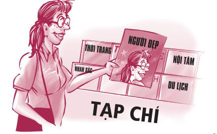
GƯƠNG KIA NGỰ Ở TRÊN TƯỜNG…
Mỗi ngày chúng ta đều soi gương. Những lúc ấy, bạn đều phải lựa chọn sẽ nhìn vào chiếc gương xã hội hay chiếc gương sự thật, chọn tập trung vào những điểm yếu hay những phẩm chất tốt đẹp của mình. Chúng ta hãy cùng quan sát ba thời điểm chúng ta thường soi gương.
THỜI ĐIỂM CHUẨN BỊ BẢN THÂN. Mỗi khi bạn soi gương để chuẩn bị sẵn sàng cho một ngày mới hoặc một buổi hẹn hò quan trọng, bạn có thể:
THỜI ĐIỂM CẢM THẤY BẤT AN. Khi bạn đang đi chơi cùng một nhóm bạn và bỗng cảm thấy bất an (tất cả chúng ta đều thỉnh thoảng trải qua cảm giác này), bạn có thể:
THỜI ĐIỂM CẦN SỰ DŨNG CẢM. Khi bạn đang sợ hãi không dám thử một điều mới mẻ, chẳng hạn như thi tuyển vào đội tuyển thể thao của trường, bạn có thể:
Việc tham khảo thông tin từ chiếc gương sự thật sẽ mang đến cho bạn sức mạnh trong khi việc tham khảo thông tin từ chiếc gương xã hội sẽ hút hết sức mạnh của bạn. Lựa chọn nằm trong tay bạn. Hãy nhớ những gì nhà tư vấn Julia DeVillers đã nói: “Bạn không thể sống tốt đời mình nếu cứ lo lắng rằng thế giới đang nhìn bạn chằm chằm. Khi bạn để quan điểm của người khác tác động đến nhận thức của mình về bản thân, bạn đã từ bỏ sức mạnh của mình… Bí quyết để luôn cảm thấy tự tin chính là hãy luôn lắng nghe phiên bản bên trong của bạn - con người thật của bạn”.
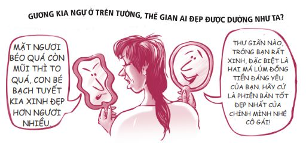
Phẩm chất và năng lực
Hãy tưởng tượng: Bạn vừa được thông báo mình bị mắc bệnh tim và cần được phẫu thuật ngay. Bạn được chọn một trong hai vị bác sĩ để làm phẫu thuật cho mình. Vị bác sĩ đầu tiên là bác sĩ Tốt, ông nổi tiếng là một bác sĩ thật thà và quan tâm sâu sắc đến các bệnh nhân của mình. Tuy nhiên, ông chưa bao giờ thực hiện một ca mổ tim nào cả.
Vị bác sĩ thứ hai là bác sĩ Giỏi, ông nổi tiếng là một bác sĩ phẫu thuật thiện nghệ. Vấn đề duy nhất chính là ông ấy rất tham lam và không trung thực. Ông thường ép bệnh nhân làm phẫu thuật để kiếm thêm tiền dù có những lúc bệnh nhân không thật sự cần được phẫu thuật.
Vậy bạn sẽ chọn ai? Bác sĩ Tốt - một con người tốt bụng nhưng thiếu năng lực, hay bác sĩ Giỏi - một bác sĩ có tay nghề cao nhưng thiếu đạo đức?
Điều bạn thật sự mong muốn là một bác sĩ vừa trung thực lại vừa có tay nghề cao, một con người vừa có năng lực tốt vừa có phẩm chất tốt.
Hai thành tố quan trọng tạo nên một vị bác sĩ tốt - phẩm chất và năng lực - cũng chính là hai thành tố chính yếu giúp xây dựng nên giá trị bản thân. Chúng ta hãy cùng định nghĩa hai thành tố này nhé.
Phẩm chất chính là những đặc điểm của con người bạn, là những đức tính mà bạn sở hữu, góp phần định hình nên con người bạn. Những đức tính ấy có thể là: tính chính trực, lòng trung thực, tính siêng năng và tính thân thiện.
Năng lực chính là những thứ bạn giỏi, là tài năng, kỹ năng và khả năng của bạn. Chúng ta ngưỡng mộ những người có năng lực, có kiến thức và giỏi giang, dù là giỏi trong việc sửa xe, chơi đàn vĩ cầm, đánh golf, ghi nhớ tên người khác hay giải phương trình bậc hai.
Hãy xem bảng dưới đây và xem bạn đang ở vị trí nào nhé.
MA TRẬN PHẨM CHẤT VÀ NĂNG LỰC
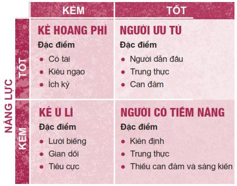
Kẻ hoang phí (phẩm chất kém, năng lực tốt) là những người có tài năng lớn nhưng lại thiếu nền tảng đạo đức. Tôi gọi họ là những kẻ hoang phí vì họ đang lãng phí tài năng của mình. Họ đang ở vị thế có thể làm được rất nhiều điều tốt đẹp nhưng họ lại không làm bởi họ chỉ biết nghĩ cho bản thân. Một trong những ví dụ về những kẻ hoang phí chính là các vận động viên tầm cỡ nhưng lại nêu gương xấu cho những em nhỏ hâm mộ họ.
Kẻ ù lì (phẩm chất kém, năng lực kém) là những người thật sự có vấn đề. Họ không hề quan tâm đến người khác và cũng chẳng mấy quan tâm đến bản thân. Họ cứ nằm trơ ra đó, không làm được gì có ích và cũng không đi được đến đâu. Họ cần phải chỉnh đốn toàn bộ cuộc đời mình.
Người có tiềm năng (phẩm chất tốt, năng lực kém) là những người tốt bụng và trung thực nhưng chưa dám thử thách bản thân mở rộng vùng an toàn của mình và học hỏi thêm nhiều kỹ năng mới. Tuy nhiên, nhờ có nền tảng đạo đức tốt, họ có tiềm năng trở thành người ưu tú. Có rất nhiều bạn trẻ thuộc dạng này. Họ đã có những điều kiện cần thiết, họ chỉ cần thúc đẩy bản thân thêm chút nữa thôi.
Người ưu tú (phẩm chất tốt, năng lực tốt) là những người sở hữu những kỹ năng thành thạo đồng thời cũng rất tốt bụng. Những người ưu tú luôn làm việc rất chăm chỉ để phát triển tài năng của mình, nhưng họ không làm thế bằng cách lợi dụng người khác. Tuy chưa hoàn hảo nhưng lúc nào họ cũng nỗ lực hoàn thiện bản thân.
May mắn thay, số lượng người có tiềm năng và người ưu tú đang ngày một nhiều hơn so với những kẻ ù lì và những kẻ hoang phí. Điều quan trọng là mọi người đều có khả năng trở thành người ưu tú. Trước hết, hãy quyết tâm thay đổi bản thân; tiếp theo, hãy từng bước xây dựng phẩm chất và năng lực của mình như cách được trình bày sau đây.
KHẢI HOÀN MÔN GIÁ TRỊ BẢN THÂN
Vài năm trước, trong một lần lái xe đến thủ đô Paris, tôi đã đi ngang qua một trong những công trình kiến trúc đẹp nhất tôi từng được chiêm ngưỡng: Khải Hoàn Môn (l’Arc de Triomphe). Đó là một chiếc cổng vòm kiểu La Mã tuyệt đẹp cao tầm năm mươi mét và rộng cũng khoảng ấy. Khải Hoàn Môn được Napoleon Đại Đế cho xây dựng cách nay hơn hai trăm năm. Xung quanh cổng vòm này là một vòng xoay khổng lồ rộng đến bảy làn xe - nơi nổi tiếng xảy ra nhiều vụ tai nạn giao thông. Trong khi mải mê ngắm chiếc cổng vòm ngoạn mục này, tôi đã bị mắc kẹt ở giữa vòng xoay. Dù tôi phải mất rất nhiều thời gian mới có thể thoát khỏi nơi đó, đây vẫn là một trong những kỷ niệm đáng nhớ nhất đối với tôi và tôi chắc rằng bạn nên ngắm chiếc cổng vòm ấy một lần trong đời!
Việc xây dựng phẩm chất, năng lực và cuối cùng là giá trị bản thân cũng được hình thành theo kiến trúc cổng vòm, hay Khải Hoàn Môn. Phía bên trái chiếc cổng vòm này là những viên đá nền tảng về phẩm chất: tính chính trực, sự phụng sự và tầm nhìn. Phía bên phải chiếc cổng là những viên đá nền tảng về năng lực: tài năng và kỹ năng; thành tích và sức khỏe thể chất. Trung tâm chiếc cổng vòm chính là hòn đá then chốt - những quyết định khôn ngoan. Đây chính là yếu tố giữ cho cả công trình liên kết với nhau và đứng vững.
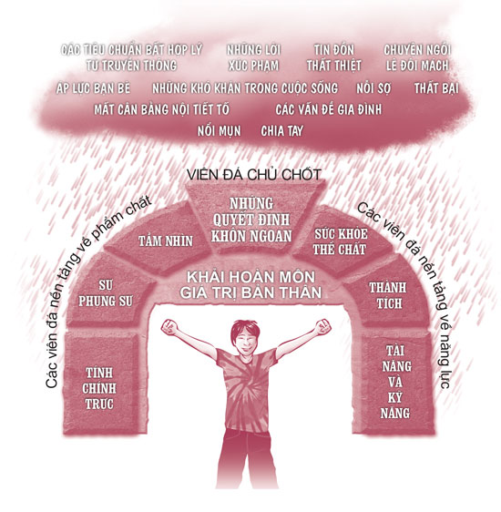
CÁC VIÊN ĐÁ NỀN TẢNG VỀ PHẨM CHẤT
Có rất nhiều yếu tố góp phần xây dựng nên phẩm chất tốt, trong đó ba yếu tố cốt lõi chính là tính chính trực, sự phụng sự và tầm nhìn.
TÍNH CHÍNH TRỰC
Tính chính trực gần giống với tính trung thực, nhưng tính chính trực có sự phát triển hơn tính trung thực một chút. Chính trực có nghĩa là sống đúng với những gì bạn tin là lẽ phải và trung thực với mọi người, kể cả chính bạn. Như Shakespeare từng viết: “Hãy thành thật với chính mình”. Chính trực là khi bạn không gian lận lúc làm kiểm tra, không nói dối cha mẹ về những việc bạn đã làm tối qua hay không nói lời ngon tiếng ngọt trước mặt người khác rồi lại nói xấu sau lưng họ. Những người chính trực biết việc gì là đúng đắn và cứ dũng cảm làm những việc đó.
Vì sao tính chính trực là nguồn gốc của giá trị bản thân? Vì khi bạn sống chính trực, bạn sẽ có được sự bình an nội tại. Khi bạn có sự bình an nội tại, bạn có thể xử lý mọi vấn đề bạn gặp phải trong cuộc sống, từ chuyện những cô bạn xấu tính đến những cuộc chia tay tan nát cõi lòng và cả những tình huống xấu hổ nữa.
Nếu bạn cũng giống như tôi và hầu hết các bạn trẻ khác, hẳn bạn cũng mắc sai lầm và cần bồi dưỡng thêm tính chính trực của mình. Không ai hoàn hảo cả. Vì vậy, nếu bạn làm hỏng việc, hãy bình tĩnh sửa chữa sai lầm. Đừng bao giờ cố gắng che giấu sai lầm của mình, vì làm vậy chỉ khiến mọi việc tệ hại thêm thôi.
“Nếu bạn không muốn mắc sai lầm vào NGÀY MAI, hãy nói thật ngay HÔM NAY.”
- Diễn viên Lý Tiểu Long
Năm 1974, Richard M. Nixon, tổng thống thứ ba mươi bảy của Mỹ, bị cáo buộc liên quan đến vụ bê bối Watergate 6 . Lúc vụ cáo buộc mới nổ ra, ông đã xuất hiện trên kênh truyền hình quốc gia và phủ nhận mọi sự liên quan tới vụ lùm xùm. Ông nói: “Tôi không phải là kẻ lừa đảo”. Sau cùng, sự thật cũng bị phanh phui: Richard Nixon có liên quan đến vụ bê bối này. Ông biết rõ chuyện gì đang diễn ra nhưng vẫn cố che giấu tội lỗi của mình. Sau khi biết rõ mọi chuyện, người dân Mỹ đã bất bình đến nỗi ông buộc phải từ chức trong ô nhục. Việc che giấu lỗi lầm còn nghiêm trọng hơn cả việc phạm phải lỗi lầm ấy. Người ta có thể nhanh chóng tha thứ lỗi lầm, nhưng lại rất khó tha thứ cho hành vi che giấu, lấp liếm.
6 Vụ Watergate là một vụ bê bối chính trị trên chính trường Mỹ xảy ra từ năm 1972 đến năm 1974. Vụ bê bối này đã khiến Tổng thống Richard Nixon phải từ chức.
Cha mẹ tôi kể rằng năm tôi tám tuổi, tôi từng chơi trò đốt lửa ở cửa sổ tầng hầm nhà hàng xóm. Thế rồi ngọn lửa bắt đầu cháy phừng lên vượt tầm kiểm soát và suýt chút nữa thiêu rụi ngôi nhà của người hàng xóm ấy. Bạn cũng hình dung ra rồi đấy, hàng xóm của tôi, ông Beckham, đã vô cùng giận dữ và sau vụ đó tôi đã bị mang tiếng là một đứa trẻ hư chuyên gây rắc rối trong khu phố.
Để giúp tôi chuộc lại lỗi lầm và tự cứu lấy danh dự của mình, cha đã dạy tôi về phương pháp nhân bốn. Phương pháp nhân bốn có nghĩa là khi bạn mắc một sai lầm, bạn phải làm bốn việc tốt để bù đắp lại sai lầm ấy. Thế là tôi tự giác dọn sạch cửa sổ tầng hầm nhà ông Beckham, quét sân cho ông và làm thêm vài việc nữa để bù đắp cho vụ hỏa hoạn vừa rồi. Không biết bạn có tin không, nhưng sau đó ông Beckham đã thật sự quý mến tôi và danh tiếng của tôi trong khu phố cũng được khôi phục. Phương pháp nhân bốn hiệu quả thế đấy.
Vì vậy, khi bạn mắc sai lầm, hãy áp dụng phương pháp nhân bốn. Nếu bạn đã nói dối một chuyện lớn với cha mẹ, hãy làm bốn việc tốt cho cha mẹ để bù đắp, ví dụ như bạn sẽ rửa chén một hôm, rửa xe giúp cha mẹ, viết một bức thư xin lỗi và không bao giờ nói dối nữa.
Hãy sửa chữa thay vì che giấu lỗi lầm - đây chính là nội dung chính của tính chính trực.
Wilfred Grenfall nói: “Khi chúng ta chăm sóc, giúp đỡ người khác, chúng ta đang trả tiền thuê cho chỗ ở của mình trên trái đất này”. Quả thật là vậy, nếu bạn thật sự để tâm suy nghĩ, bạn sẽ thấy chúng ta có quá nhiều thứ để biết ơn. Bạn hãy thử nghĩ mà xem:
SỰ PHỤNG SỰ
• Nếu bạn đang đọc quyển sách này, bạn đã may mắn hơn gần một tỷ người không biết đọc.
• Nếu bạn có chỗ ở, có thức ăn trong tủ lạnh và quần áo mặc trên người, bạn đã giàu có hơn gần ba tỷ người có thu nhập dưới hai đô-la mỗi ngày.
• Nếu tuần này bạn có thể tham dự một hoạt động tôn giáo mà không phải lo sợ mình sẽ bị quấy rối, bắt bớ, hành hạ hay giết chết, bạn đã may mắn hơn hai tỷ người đang sống trong hoàn cảnh này.
• Nếu hôm nay bạn được ăn tối, bạn đã hạnh phúc hơn một phần năm dân số thế giới - những người phải đi ngủ với cái bụng đói meo đêm nay.
Bởi vì chúng ta đã được nhận quá nhiều, chúng ta phải biết cho đi.
Chúng ta có vô số cách để phụng sự và chăm sóc người khác: Bạn có thể nhận nuôi chó, mèo lang thang, tình nguyện giúp đỡ các em nhỏ có hoàn cảnh khó khăn, tình nguyện dạy kèm cho một trường học trong nội thành, đọc sách cho các em nhỏ trong bệnh viện, giúp đỡ các cựu chiến binh, tham gia một câu lạc bộ phục vụ cộng đồng, tuyên truyền tác hại của ma túy hoặc đơn giản là cố gắng hết sức cư xử tử tế với những người đang cần sự tử tế của bạn.
Lạ lùng thay, khi bạn cố gắng xây dựng giá trị bản thân cho người khác, bạn cũng đang xây dựng giá trị bản thân cho chính mình. Tác giả Nathaniel Hawthorne nói về việc đó như sau:
“Hạnh phúc cũng giống như một chú bướm vậy. Bạn càng cố đuổi theo nó, nó sẽ càng chạy trốn bạn. Nhưng nếu bạn chuyển sự chú tâm của mình sang những thứ khác, nó sẽ bay đến và nhẹ nhàng đậu trên vai bạn.”
Cô cháu gái Shannon của tôi đã học được bài học này khi hãy còn rất trẻ. Lần đó, con bé đã quyết định từ bỏ cuộc sống tiện nghi của mình trong vài tháng để đi làm tình nguyện tại một trại trẻ mồ côi ở Romania. Dưới đây là một đoạn trích trong một lá thư Shannon gửi về:
Cháu đã thật sự bị sốc văn hóa vào lần đầu tiên đến trại trẻ mồ côi. Cháu bước vào phòng và nhìn thấy tất cả các em nhỏ ở đó đang nằm trong cũi, ánh mắt vô định nhìn khoảng không phía trước. Một số chiếc cũi có đến ba bé nằm chung. Tim cháu như thắt lại khi chứng kiến những em bé xinh đẹp ấy phải sống trong cảnh thiếu thốn tình thương và sự quan tâm, chăm sóc. Cháu muốn bế từng em lên và thật sự không muốn đặt các em trở lại cũi nữa.
Cháu vẫn nhớ rõ lần đầu tiên cô bé Denisa đáng yêu ngủ thiếp đi trên tay cháu. Cháu không muốn đặt cô bé xuống bởi cháu biết đây có thể là lần đầu tiên Denisa được thiếp đi trong vòng tay một người lớn thay vì lủi thủi ngủ một mình trong chiếc cũi kim loại lạnh lẽo. Khi lặng lẽ ngắm nhìn cô bé ngủ, cháu có thể cảm nhận được tâm hồn nhỏ bé xinh đẹp của em ấy và cháu nhận ra Chúa cũng biết và yêu Denisa nhiều như cháu yêu em ấy vậy.
Một lần khác, cháu phụ trách ru các em bé hai tuổi ngủ. Khi hai tay cháu đang bế hai bé, một em bé thứ ba chợt òa khóc vì cũng muốn được bế. Do không thể bế cả ba bé, cháu vội kéo ghế đến ngồi bên cũi của bé thứ ba để có thể dỗ dành cả bé nữa. Cháu bắt đầu hát bài Edelweiss; đây là bài hát cha từng hát cho cháu nghe hồi cháu còn nhỏ. Mặc dù giọng hát của cháu không hay cho lắm, cậu bé kia đã nhanh chóng ngừng khóc và chăm chú lắng nghe cháu hát. Và cháu đã nhìn thấy thêm một linh hồn xinh đẹp nữa trong một trại trẻ mồ côi ở tận Romania, nơi cách nhà cháu xa ơi là xa.
Cháu đã đem lòng yêu thương những đứa trẻ ấy - những em bé hay vươn tay ra đòi bế và chập chững chạy về phía cháu, gọi cháu là mẹ. Mỗi ngày cháu đều cầu nguyện một ngày nào đó các em sẽ có một cuộc sống tốt đẹp hơn hiện tại. Cháu vô cùng biết ơn vì đã quyết định từ bỏ cuộc sống ích kỷ của bản thân trong mấy tháng ngắn ngủi để có thể mang đến cho các em vài khoảnh khắc hiếm hoi được sống trong hạnh phúc và tình yêu thương. Cháu không thể nào trả hết được ơn các em vì những gì các em đã mang đến cho cháu và cách các em đã thay đổi cuộc đời cháu mãi mãi.
Giống như một giọt nước rơi xuống hồ, những điều tốt đẹp bạn làm sẽ tiếp tục tạo nên những gợn sóng lan tỏa thật xa. Sau khi từ Romania trở về nhà, Shannon đã chia sẻ trải nghiệm tại trại trẻ mồ côi của mình ở các trường học và nhà thờ nhằm khuyến khích mọi người tham gia công tác tình nguyện. Kết quả là đã có một số bạn nữ trong khu phố của con bé xung phong đi làm tình nguyện ở Romania. Shannon đã vô cùng hạnh phúc khi biết những đứa trẻ mình yêu thương sẽ tiếp tục được nhiều người khác quan tâm, chăm sóc.
Nếu tôi có thể ngăn một trái tim tan vỡ
Thì xem như đời tôi không vô ích;
Nếu tôi có thể giúp một cuộc đời bớt khổ sở
Hay xoa dịu nỗi đau của ai đó
Hay giúp một chú chim mỏi mệt tìm về tổ
Thì xem như đời tôi không hoang phí.
- Emily Dickinson
TẦM NHÌN
Helen Keller nói: “Kẻ thảm bại nhất trên đời là kẻ có mắt nhưng không có tầm nhìn”. Những lời này khá gay gắt nhưng bà ấy đã đề cập đến một vấn đề rất hay. Sống có tầm nhìn đúng là một nền tảng quan trọng giúp chúng ta xây dựng giá trị bản thân. Nếu không có tầm nhìn, bạn sẽ không tận dụng được những đặc quyền và tiềm năng của mình.
Câu chuyện về cô bạn Ana của tôi đã cho thấy việc có tầm nhìn ngay từ sớm sẽ tạo nên những khác biệt lớn lao như thế nào.
Tôi không thể hình dung nổi cuộc sống sẽ ra sao nếu không có sách. Tôi đọc sách suốt. Mẹ tôi cũng thích đọc sách nên những lần mẹ thấy tôi mải mê đọc, mẹ sẽ giúp tôi làm việc nhà. Tôi yêu mùi hương và cảm giác khi chạm vào những quyển sách. Ngay từ khi còn nhỏ, tôi đã biết mình muốn làm việc trong lĩnh vực có liên quan đến sách.
Bên cạnh sở thích đọc sách, tôi còn ước mơ được nhìn ngắm thế giới. Cha tôi nói rằng nhờ những chuyến công tác xa mà ông đã có cơ hội đi khắp nơi trên thế giới và ông thường kể cho chúng tôi nghe những câu chuyện về các vùng đất xa lạ ông từng đi qua. Tôi lúc nào cũng mê mẩn mấy quyển tạp chí du lịch. Một lần nọ, tôi được mời tham gia một chương trình trao đổi học sinh ở Nhật Bản và tôi đã nài nỉ cha cho đi, nhưng lúc đó chúng tôi không đủ khả năng trang trải chi phí cho chuyến đi đó. Cha tôi không phải là người bủn xỉn và tôi biết ông rất đau lòng khi không thể đáp ứng nguyện vọng của tôi. Sau lần đó, tôi đã thề rằng tôi sẽ tìm được cách để thực hiện ước mơ ngắm nhìn thế giới của mình.
Tầm nhìn của tôi về sách và về việc du lịch đã ảnh hưởng rõ rệt đến con đường học tập của tôi. Cuối cùng, tầm nhìn này đã đưa tôi đến quyết định làm việc trong ngành xuất bản. Hiện tại, tôi phụ trách bán bản quyền sách cho các nhà xuất bản ở khắp nơi trên thế giới. Với công việc này, tôi có thể đắm mình trong sách! Tôi phải lên kế hoạch xuất bản, đọc sách, biên tập sách, đặt tên cho các quyển sách và bán sách. Quan trọng nhất, tôi có cơ hội đi khắp nơi trên thế giới để tham dự các hội chợ sách và được gặp gỡ những nhà xuất bản ở những vùng đất xa lạ, chẳng hạn như Bắc Kinh, Amsterdam và Mexico City!
Tôi cảm thấy việc tầm nhìn của tôi về sách và du lịch giờ đã trở thành hiện thực là việc thật sự rất kỳ diệu. Giờ đây, tôi nhận ra việc có một tầm nhìn từ khi còn là một đứa trẻ đã ảnh hưởng đến hàng trăm quyết định nhỏ mà tôi đã đưa ra suốt nhiều ngày, nhiều tuần, nhiều năm và cuối cùng tầm nhìn ấy đã đưa tôi đến vị trí hiện tại của mình.
Chúng ta có bốn công cụ độc đáo, hay nói đúng hơn là bốn món quà trời cho, giúp chúng ta trở thành con người mình mong muốn. Các công cụ này chính là sức mạnh ý chí (sức mạnh chọn lựa cách phản ứng với những việc xảy đến với mình), sự tự nhận thức (khả năng quan sát một cách khách quan những suy nghĩ và hành động của chính mình), lương tâm (tiếng nói nội tâm cho ta biết điều gì là đúng, điều gì là sai) và trí tưởng tượng (khả năng hình dung ra những ý tưởng, khả năng mới). Khi chúng ta tạo ra tầm nhìn cho tương lai của mình, chúng ta đã sử dụng hiệu quả những khả năng đặc biệt này, đặc biệt là khả năng tưởng tượng. Chúng ta có thể tạo ra tầm nhìn cho cuộc sống bằng cách viết ra những mục tiêu của mình, viết một lời xác quyết hoặc đơn giản là hình dung rõ ràng trong tâm trí những gì chúng ta muốn làm với đời mình và con người chúng ta muốn trở thành - giống như những việc Ana đã làm. Một tầm nhìn cho tương lai cũng có thể giúp chuyển hướng cuộc đời ta, giúp chúng ta vươn lên từ gian khó, như trường hợp của Ferron sau đây.
Đến giờ mình vẫn không biết cha ruột mình là ai. Mình lớn lên trong một căn nhà tồi tàn chỉ có một phòng ngủ cùng cha dượng, ba cô em gái và một người mẹ nghiện rượu.
Ngay từ khi còn nhỏ, mình đã nhận ra không phải ai cũng sống như mình. Vì thế mình đã tìm đến một nhà thờ địa phương. Mình thường tự đi bộ đến nhà thờ và dành thời gian ở đó như một cách để lánh nạn khỏi nhà.
Khi vào cấp hai, mình nhận ra mình có thể cải thiện tình trạng của bản thân bằng cách làm việc chăm chỉ. Mình biết mình có tố chất để thành công. Mình có thể nhìn thấy thật rõ ràng hình ảnh bản thân đang nếm trải hương vị thành công vào một ngày nào đó.
Mình lập mục tiêu trở thành nhà vô địch môn đấu vật trong giải đấu toàn bang. Trước mỗi buổi luyện tập, mình tự chạy thêm năm dặm để có thể chất tốt hơn các đối thủ. Sau các buổi tập thường quy, mình ở lại để tập riêng với huấn luyện viên thêm khoảng một tiếng nữa.
Trong suốt nhiều năm, mình luôn giữ tầm nhìn về tương lai ở ngay trước mắt. Mình cố gắng luyện tập chăm chỉ hơn mọi người với niềm tin rằng mình sẽ có thể thay đổi cuộc đời mình.
Mọi việc đã diễn ra đúng như những gì mình hình dung. Vào năm lớp Mười Hai, mình trở thành nhà vô địch toàn bang môn đấu vật và mình đã nhận được một học bổng đại học toàn phần.
Mình vẫn thường thắc mắc làm thế nào mình lại có đủ động lực để vượt lên hoàn cảnh như thế. Mình đã may mắn gặp một vài thầy cô và những người lớn thật sự quan tâm đến mình và hết lòng giúp đỡ mình trong suốt hành trình đó. Họ là những tấm gương tuyệt vời và họ luôn động viên mình hình dung và tin tưởng bản thân sẽ thành công trong tương lai.
Cả ba người em gái của mình đều không thể tốt nghiệp trung học và tất cả đều phải vật lộn với ma túy và rượu. Mình không hoàn tất chương trình đại học, nhưng hiện tại mình có một công việc ổn định với thu nhập đủ để lo cho gia đình. Mình có thể nhìn thấy rất rõ sự khác biệt giữa việc cứ sống vật vờ và việc nỗ lực hướng đến một tầm nhìn về thành công trong cuộc sống.
Giống như Ferron, hãy hình dung về tương lai mà bạn mong muốn rõ ràng đến nỗi bạn có thể nếm trải được tương lai ấy ngay bây giờ. Đừng bao giờ nghi ngờ bản thân. Bạn có giá trị vô tận. Tôi đảm bảo rằng bạn có những sức mạnh và tài năng mà thậm chí bản thân bạn cũng chưa biết. Hãy kiên nhẫn. Đừng so sánh bản thân với người khác. Tất cả chúng ta sẽ gặt hái thành công vào những thời điểm khác nhau. Hãy sử dụng những khả năng thiên phú đó để hình dung về tương lai của bạn. Bạn giỏi ở lĩnh vực nào? Bạn thích làm việc gì? Bạn có thể giúp đỡ người khác bằng cách nào? Bạn muốn sống một cuộc sống như thế nào trong năm, mười hay hai mươi năm nữa? Hãy nhắm trước đích đến trước khi khởi hành và chèo lái con thuyền cuộc đời theo đúng hướng đã định. Oprah Winfrey đã nói về điều này như sau: “Hãy tạo ra tầm nhìn cao nhất, vĩ đại nhất có thể cho đời mình, bởi vì bạn sẽ trở thành những gì mình tin tưởng”.
CÁC VIÊN ĐÁ NỀN TẢNG VỀ NĂNG LỰC
Hồi còn tuổi teen, tôi đã tham dự rất nhiều hội thảo “truyền cảm hứng” và nghe rất nhiều câu nói đại loại như: “Bạn là một con người tuyệt vời. Hãy tự hào về bản thân!”. Sau đó, tôi ra về và chẳng cảm thấy tự hào về bản thân hơn chút nào. Bạn không thể tự hào về bản thân chỉ dựa vào việc nghe ai đó yêu cầu bạn phải yêu quý bản thân mình, trong khi lại không chịu làm gì để cải thiện bản thân. Mặc dù phẩm chất là yếu tố quan trọng giúp tạo ra giá trị bản thân, chỉ mỗi phẩm chất thôi vẫn chưa đủ, ta còn cần thêm những yếu tố khác nữa. Cách giúp ta xây dựng giá trị bản thân nhanh nhất chính là tìm thấy và phát triển một tài năng hay kỹ năng nào đó. Đây chính là năng lực của chúng ta và chúng ta không có lựa chọn thay thế. Những viên đá nền tảng về năng lực bao gồm tài năng và kỹ năng, thành tích và sức khỏe thể chất.
TÀI NĂNG VÀ KỸ NĂNG
Càng trưởng thành, tôi càng tin sâu sắc rằng mỗi người đều được sinh ra với những tài năng và kỹ năng độc nhất của riêng mình. Nhưng những thứ này không tự nhiên tìm đến bạn. Bạn phải chủ động tìm những tài năng và kỹ năng của mình. Tôi còn nhớ lần tôi bị gãy tay khi còn nhỏ. Đến khi tôi tháo bột, cánh tay tôi đã biến thành một thứ teo tóp đầy lông do không được vận động trong một thời gian dài. Cuộc sống cũng như thế đấy. Nếu chúng ta không thúc đẩy bản thân thử những điều mới lạ, chúng ta sẽ ngày càng trở nên yếu kém, suy kiệt. Nếu muốn phát triển, chúng ta phải không ngừng mở rộng vùng an toàn của mình và dũng cảm dấn thân vào những vùng đất mới. Bằng cách nào? Hãy thúc đẩy bản thân phát triển, hãy thử sức ở những lĩnh vực mới, nắm bắt cơ hội, chấp nhận thất bại rồi vươn lên từ thất bại ấy và khám phá những đỉnh cao mới. Cũng giống như cơ bắp, năng lực của chúng ta chỉ có thể được phát triển nhờ sự tôi luyện.
Melody đã nhận ra việc nâng tầm bản thân có thể giúp chúng ta cảm thấy tự tin hơn.
Khi thử giọng cho Dàn đồng ca Liên bang ở Kentucky, bạn phải hát trong một nhóm tứ tấu. Mình vô cùng khao khát được tham gia Dàn đồng ca Liên bang, thế nhưng lần đầu tiên giáo viên dàn đồng ca gọi mình lên hát trước lớp, mình đã thấy rất căng thẳng, tim mình đập loạn xạ, lòng bàn tay rướm mồ hôi và hai chân mình run lập cập. Sau lần đó, mình đã hát trước lớp hơn hai mươi lần. Mình đã nỗ lực mở rộng vùng an toàn của bản thân để không cảm thấy căng thẳng nữa. Buổi thử giọng của mình sẽ diễn ra vào tối mai và giờ mình hoàn toàn tự tin. Mình biết mình sẽ làm được.
Hãy nghĩ về cuộc đời bạn. Liệu bạn có đang lãng phí những tài năng mình được ban tặng không? Hay bạn đang không ngừng thúc đẩy bản thân và học hỏi thêm những điều mới mẻ? Tôi có biết một nữ sinh lớp Chín tên Roxy, một nhà thiết kế kiêm thợ may xuất sắc. Cô bé có thể thiết kế và may được những bộ quần áo tuyệt đẹp. Mặc dù rất tự hào về kỹ năng may vá của mình, Roxy lại nói: “Không một ai nghĩ việc may vá là ngầu cả”. Thật ra, không ai có quyền phán xét cái gì ngầu và cái gì không ngầu. Cá nhân tôi cho rằng tất cả những việc bạn có thể làm một cách xuất sắc và thành thạo đều ngầu, dù đó là việc may vá, viết lách, sắp xếp công việc, đọc nhanh, dạy học cho trẻ con hay xây dựng nội dung website.
Khi còn nhỏ, tôi rất sợ phải nói chuyện trước đám đông. Vì muốn chinh phục nỗi sợ này, tôi đã đăng ký một lớp thuyết trình vào năm lớp Bảy. Vào lần đầu tiên phải thuyết trình trước lớp, tôi thấy sợ chết khiếp. Nhưng mọi thứ dần khá hơn sau từng lần thuyết trình. Suốt bốn năm sau đó, tôi đã đăng ký thêm rất nhiều lớp thuyết trình và hùng biện để phát triển kỹ năng nói trước công chúng của mình. Mặc dù tôi chưa bao giờ hoàn toàn vượt qua được nỗi sợ, tôi đã tiến bộ hơn rất nhiều trong vai trò một diễn giả và nhờ đó tôi đã trở nên tự tin hơn.
Tôi có biết một cậu bé khiếm thị ở Tây Tạng tên Tashi Pasang, người có một tuổi thơ hết sức gian nan, cơ cực. Năm Tashi mới mười một tuổi, cha cậu đã đưa cậu đến thành phố Lhasa để đổi cậu lấy một đứa bé sáng mắt bởi ông xem cậu là gánh nặng trong nhà. Tashi liên tục bị những đứa trẻ bụi đời khác cướp bóc và đánh đập. May mắn thay, cậu đã sống sót qua mùa đông đầu tiên phải sống bụi đời bằng cách ăn xin và giữ ấm cơ thể bằng túi ni-lông.
Cuối cùng, một số người dân Tây Tạng tốt bụng đã phát hiện ra cậu và đưa cậu đến một ngôi trường dành cho trẻ em khuyết tật. Tại đây, dù gặp phải nhiều khó khăn do bị khiếm thị, Tashi đã không ngừng nỗ lực phát triển các tài năng và kỹ năng của mình. Giờ đây, cậu có thể đọc, viết và nói được ba thứ tiếng: Tây Tạng, Trung Quốc và tiếng Anh. Cậu sử dụng một chiếc máy vi tính có khả năng nhận dạng tiếng nói để học tập và làm việc. Gần đây, cậu cũng nhận được giấy phép hành nghề xoa bóp trị liệu chính thức do chính phủ Trung Quốc cấp.
Đến đây, bạn có còn nghĩ những vấn đề của mình là nan giải nữa không?
Nhờ lòng hảo tâm của những con người tốt bụng và với khả năng đọc, viết và nói ba thứ tiếng, Tashi đã được trang bị đủ các yếu tố cần thiết để có thể sống một cuộc đời thành công, có ích. Bạn thấy đấy, ngày nay, là người tốt thôi vẫn chưa đủ. Bạn phải có năng lực, bạn phải có khả năng tạo ra giá trị. Nhân nói về năng lực, tôi xin chia sẻ thêm rằng Tashi cùng với năm bạn trẻ Tây Tạng khiếm thị khác đã chinh phục đỉnh Everest với sự giúp đỡ của một số vận động viên leo núi khiếm thị người Mỹ đấy.
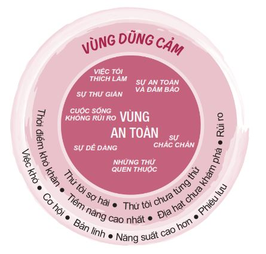
THÀNH TÍCH
Bạn sẽ trở nên mạnh mẽ hơn sau khi chinh phục thành công một thử thách. Trong các truyền thuyết, khi một hiệp sĩ đánh bại kẻ thù của mình, anh ta sẽ hấp thụ hết sức mạnh của kẻ thù ấy. Tương tự như vậy, khi chúng ta khắc phục được một điểm yếu, kháng cự lại một cám dỗ hay hoàn thành một mục tiêu mình đã đề ra, chúng ta sẽ học hỏi được nhiều điều từ những thách thức ấy và trở nên mạnh mẽ hơn. Đối với một số bạn, thành tích là đạt toàn điểm A; đối với một số bạn khác, thành tích là xây dựng được một đội nhóm vững mạnh hay khắc phục được một điểm yếu, chẳng hạn như thói quen nói tục chửi thề.
Thế nhưng, cũng có đôi khi thành tích chúng ta đạt được lại không giống như những gì chúng ta mong đợi. Tanner, một học sinh trường Trung học Northridge, đã đặt mục tiêu trở thành nhà vô địch toàn bang môn đấu vật như anh trai cậu ấy. Sau nhiều năm tập luyện chăm chỉ, Tanner đã trở thành một trong những đô vật hàng đầu trong vùng. Cuối cùng, cậu cũng có cơ hội chứng tỏ bản lĩnh trong kỳ sát hạch chọn vận động viên tham gia giải đấu toàn bang.
Đáng tiếc thay, trong trận đấu cuối cùng của kỳ sát hạch, Tanner đã bị trật khủy tay nghiêm trọng và giấc mơ trở thành nhà vô địch toàn bang của cậu hoàn toàn tan vỡ. Cậu đã cảm thấy thất vọng và suy sụp trong suốt một thời gian dài cho đến khi nhận được một lá thư từ anh trai mình. Anh cậu viết:
Tanner à,
Cảm giác khi trở thành nhà vô địch toàn bang rất tuyệt vời, nhưng không phải ai cũng nhớ đến em vì chức vô địch đâu. Mọi người sẽ nhớ về sự nhiệt huyết của em trong lúc em chuẩn bị cho giải đấu. Em đã dốc hết sức mình để chuẩn bị thi đấu cho bang và đó mới chính là điều thật sự quan trọng và có ý nghĩa. Em đã dành trọn tâm huyết cho giải đấu.
Tanner đã cảm động sâu sắc khi đọc bức thư. Hơn thế nữa, trong suốt giải đấu toàn bang, tất cả thành viên trong đội đều mang băng chống căng cơ khủy tay mỗi khi thi đấu để vinh danh cậu ấy. Chính lúc này, Tanner đã nhận ra cậu thật sự đã đạt được mục tiêu mà ban đầu mình đề ra.
Giữa vị trí hiện tại của chúng ta và nơi chúng ta muốn đến luôn tồn tại một khoảng cách. Có lúc khoảng cách ấy rất nhỏ; nhưng cũng có lúc khoảng cách này là rất lớn. Bất kể khoảng cách ấy của bạn là nhỏ hay lớn, hãy cứ sống tích cực, không ngừng nỗ lực rút ngắn khoảng cách và đừng quá cầu toàn, vì sẽ có những lúc thành tích bạn đạt được không hoàn toàn giống với mục tiêu ban đầu của bạn. Nếu bạn có thể rút ngắn khoảng cách này, dù chỉ một chút thôi, đó cũng đã là một thành tích đáng để tự hào rồi.
SỨC KHỎE THỂ CHẤT
Hồi còn nhỏ, tôi rất thích nước ngọt có gas, bánh vòng và tất cả các loại khoai tây chiên, thế nên cũng dễ hiểu tại sao tôi thường bị nói là mập ú. Tôi hay hỏi mẹ: “Mẹ ơi, mẹ có thấy con mập không?”. Mẹ tôi trả lời: “Không, con đâu có mập. Con chỉ vạm vỡ thôi”. Mỗi lần nghe mẹ nói thế, tôi đều cười toe toét quay đi: “Hoan hô, mình không hề mập. Mình chỉ vạm vỡ thôi”.
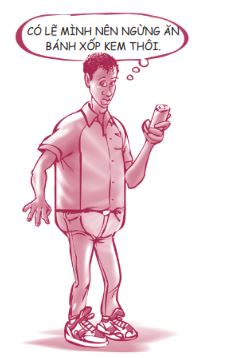
Mùa hè năm tôi chuẩn bị vào lớp Tám, cha cho tôi tham gia một chuyến leo núi huấn luyện kỹ năng sinh tồn kéo dài bốn ngày để giúp tôi trở nên rắn rỏi hơn. Tôi ghét cái chuyến leo núi ấy kinh khủng. Nói ngắn gọn, khoảng tám mươi đứa bọn tôi phải đi khoảng tám mươi ki-lô-mét đường núi trong thời gian bốn ngày mà chẳng được ăn uống gì ngoài rau cỏ. Những người chỉ huy đã buộc chúng tôi phải làm rất nhiều chuyện điên rồ, chẳng hạn như đu dây xuống vách núi, lội qua những con sông cuồn cuộn chảy xiết hay thậm chí giết và ăn thịt một con cừu non dễ thương. Tội nghiệp con vật!
Sau chuyến huấn luyện đó, tôi đã sụt gần bốn kí-lô-gam. Khi tôi về nhà, bạn của mẹ tôi đã thốt lên khi nhìn thấy tôi: “Này Sean, trông cháu gầy đi đấy”. Đó là lần đầu tiên trong đời có người nói với tôi như thế. Tôi sướng rơn. Đó chính là cú hích đầu tiên khởi đầu quá trình giảm cân của tôi.
Ngay sau đó, tôi đã chạy đi tìm bản hướng dẫn ăn uống lành mạnh của mẹ. Dù một số chi tiết hiện đã được thay đổi, bản hướng dẫn này đã giúp tôi giảm cân rất hiệu quả. Bản hướng dẫn tôi dùng ngày trước chia thực phẩm ra thành từng nhóm và mỗi nhóm thực phẩm sẽ đi kèm với những ô vuông nhỏ thể hiện số khẩu phần bạn được phép ăn mỗi ngày. Tôi còn nhớ như in bản hướng dẫn ấy. (Hiện tại, Bộ Nông nghiệp Hoa Kỳ đã công bố một bản hướng dẫn ăn uống lành mạnh mới như hình bên dưới.)
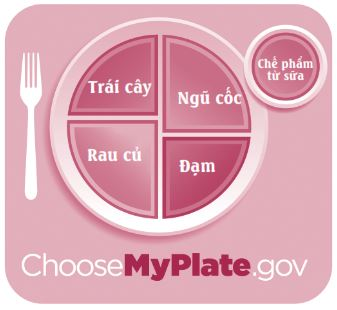
Sau khi để ý quan sát khẩu phần ăn của mình trong vài ngày, tôi nhận ra mình chỉ toàn ăn bánh mì, thịt và chất béo. Tôi ăn rất ít trái cây, rau củ và các chế phẩm từ sữa. Tôi cũng hiếm khi uống nước lọc. Thật sốc! Thế nên, tôi bắt đầu tuân thủ nghiêm ngặt chế độ ăn uống lành mạnh. Mỗi tối trước khi đi ngủ, tôi sẽ kiểm tra lại xem mình đã ăn những gì vào ngày hôm đó. Tôi vẫn ăn một lượng thức ăn như cũ, chỉ là loại thức ăn tôi chọn lựa khác đi mà thôi, chẳng hạn như tôi bắt đầu ăn nhiều trái cây và rau củ hơn. Tôi cũng bắt đầu tập nâng tạ và chạy bộ. Cơ thể tôi thay đổi nhanh chóng và số cân nặng dư thừa đã hoàn toàn biến mất chỉ sau vài tháng. Tôi cảm thấy khỏe mạnh và linh hoạt hơn rất nhiều. Từ vị trí cầu thủ chậm chạp nhất trong đội bóng bầu dục năm lớp Tám, tôi đã trở thành cầu thủ nhanh nhất trong đội trước sự kinh ngạc của nhiều người.
Tôi đã khám phá ra rằng khả năng giữ cơ thể cân đối cũng là một loại năng lực cần được học hỏi thông qua thử thách và trải nghiệm. Nếu bạn rèn luyện được năng lực này khi còn trẻ, bạn sẽ nhận được ích lợi cả đời. Đừng bao giờ xem thường tác động của sức khỏe thể chất lên sức khỏe tinh thần.
Dưới đây là mười nguyên tắc dinh dưỡng phổ biến có thể giúp bạn cải thiện rõ rệt sức khỏe của mình:
Thực đơn hôm nay
1. Hãy ăn sáng.
2. Đừng thử các chế độ ăn kiêng tạm thời (Fad diet). Các chế độ ăn này thường không mang lại hiệu quả lâu dài. Trong ngắn hạn, bạn sẽ giảm cân; nhưng sau đó, về lâu dài bạn sẽ lại tăng cân.
3. Hãy ăn ít nhất 500 gam rau củ và trái cây mỗi ngày. Hãy ăn uống đa dạng các nhóm thực phẩm. Ăn đủ tất cả các nhóm thực phẩm là tốt nhất.
4. Hãy ăn ngũ cốc nguyên cám, chẳng hạn như yến mạch, gạo lứt và lúa mì nguyên cám, thay cho các loại ngũ cốc đã qua chế biến như bột mì đa dụng, bánh muffin làm sẵn và gạo trắng.
5. Hãy giảm thiểu lượng đường bạn tiêu thụ mỗi ngày đồng thời hạn chế các loại thực phẩm đã qua chế biến, thức ăn chiên xào, nước ngọt có gas, ngũ cốc có đường và khoai tây chiên.
6. Hãy ăn ít nhất 56 gam đạm mỗi ngày. Các thực phẩm giàu đạm bao gồm thịt heo, thịt bò, thịt gà, cá, trứng, đậu hoặc các chế phẩm từ đậu nành.
7. Hãy ăn ít nhất hai khẩu phần chế phẩm từ sữa, tương đương 500 mi-li-lít sữa tươi mỗi ngày. Bạn có thể thay sữa bằng các thực phẩm như: phô mai sợi hoặc phô mai làm từ sữa đã gạn kem, sữa chua hoặc sữa chua đông lạnh.
8. Hãy ăn một ít chất béo có lợi cho sức khỏe mỗi ngày (cá, các loại hạt, dầu ô liu, dầu hướng dương, dầu cải).
9. Hãy rải đều lượng calo bạn hấp thu trong ngày. Tốt nhất nên ăn nhiều bữa trong ngày thay vì ăn thật no vào một bữa duy nhất.
10. Hãy uống NHIỀU nước.
Bên cạnh chế độ dinh dưỡng hợp lý, việc tập thể dục cũng rất quan trọng. Bạn có nghe về endorphin bao giờ chưa? Đây là hoạt chất não bộ tiết ra để tạo tâm trạng phấn khởi và giảm đau. Hãy thử đoán xem bạn có được hoạt chất này bằng cách nào. Chính là nhờ tập thể dục. Thật tuyệt phải không? Sao ta lại cần đến ma túy trong khi bất cứ lúc nào ta cũng có thể có endorphin liều cao tự nhiên hoàn toàn miễn phí?
Tập thể dục sẽ khiến bạn khỏe mạnh hơn, trông rạng rỡ hơn và sống lâu hơn (nhưng chắc là bạn chưa lo về vấn đề này đâu). Các chuyên gia sức khỏe của tạp chí Time đã đưa ra bốn phương pháp để có một chương trình luyện tập hợp lý và hiệu quả như sau:
• THƯ GIÃN ĐẦU ÓC: Thiền, tập Yoga, tập Pilates hoặc một môn thể dục tập trung vào việc kéo giãn cơ và hít thở sẽ giúp cơ thể thư giãn, hạn chế nguy cơ chấn thương và tăng cường tuần hoàn máu. Hãy tập ba lần một tuần để giảm stress.
• RÈN LUYỆN HỆ TIM MẠCH: Bơi lội, đi bộ nhanh, đạp xe, chạy bộ, quyền cước hoặc thể dục nhịp điệu là những môn thể dục, thể thao giúp gia tăng nhịp tim đáng kể. Những môn thể thao này có lợi cho tim, phổi và hệ tuần hoàn, đồng thời giúp đốt cháy năng lượng và chất béo trong cơ thể. Hãy tập từ ba đến năm lần một tuần, mỗi lần từ hai mươi đến sáu mươi phút.
• TẠO CƠ BẮP: Hãy tập nâng tạ hoặc tập các bài tập giảm cân ngay tại nhà như hít đất, plank (bài tập giúp cơ bụng và cánh tay săn chắc) hay tập khủy tay bằng xà kép. Các bài tập tạo cơ bắp, tăng cường sức mạnh khiến cơ thể đốt cháy nhiều calo hơn và giúp gia tăng khối lượng xương. Hãy tập từ hai đến ba lần một tuần, mỗi lần từ hai mươi đến bốn mươi phút.
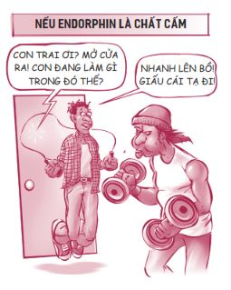
• NGHỈ NGƠI HỢP LÝ: Các bài tập tạo cơ bắp và các bài thể dục nặng khác sẽ làm đứt các sợi cơ. Trong thời gian chúng ta nghỉ ngơi, các cơ sẽ phục hồi và tự tái tạo; chúng ta cũng nên tránh tập cùng một nhóm cơ hai ngày liên tục.
Chơi thể thao chính là một cách giúp bạn thường xuyên thực hiện cả bốn hoạt động nêu trên đồng thời tìm được nhiều niềm vui và hứng khởi.
Hãy tìm hiểu thêm về chế độ ăn uống lành mạnh và việc tập thể dục. Hãy giữ vóc dáng cân đối và quan sát xem điều đó sẽ cải thiện các mặt tình cảm, trí tuệ và tinh thần của bạn như thế nào. Tôi không nói bạn phải ám ảnh về vẻ bề ngoài hay bảo bạn phải gầy. (Bạn có thể to con nhưng vẫn khỏe mạnh). Tôi đang nói về việc rèn luyện sức khỏe. Điều quan trọng là cảm giác bên trong chứ không phải vẻ bề ngoài.
NHỮNG QUYẾT ĐỊNH KHÔN NGOAN
VIÊN ĐÁ CHỦ CHỐT
Một cô bạn mười bốn tuổi tên Leah đã chia sẻ về khoảng thời gian khó khăn khi cô bé vừa vào cấp hai. Ở ngôi trường mới, dường như ai cũng đều chú trọng quá mức đến vẻ bề ngoài, quần áo và sự nổi tiếng. Leah cảm thấy mình không thể hòa nhập với các bạn đồng thời cô bé cũng thường xuyên bị chọc ghẹo vì dáng người mũm mĩm của mình.
Vài tháng sau, Leah kết thân được với vài người bạn và cô cảm thấy vui vẻ hơn rất nhiều. Thế nhưng chưa được bao lâu thì những người bạn của Leah đã bắt đầu thay đổi theo hướng tiêu cực. Họ bắt đầu ăn mặc hở hang, ăn nói thô tục và thử các chất gây nghiện.
Một tối nọ, trong khi cùng các bạn đi chơi loanh quanh thành phố, Leah bỗng nhìn những người bạn của mình và nghĩ: “Bạn bè mình trông thật thiếu đứng đắn. Trông mình có như thế không nhỉ?”. Ngay sau đó, cô bé đã gọi điện nhờ mẹ đến đón mình về. Tối hôm ấy, Leah đã đưa ra một quyết định dũng cảm là sẽ không đi chơi với những người bạn ấy nữa.
Leah đã phải trải qua vài tuần lễ vô cùng khó khăn sau đó. Những người bạn cũ tẩy chay cô bé bởi vì cô không đi chơi với họ nữa. Cô bé thường phải ăn trưa trong nhà vệ sinh vì cảm thấy quá ngượng khi phải ngồi ăn một mình trong căng-tin.
Nhưng Leah đã không nản chí và chỉ vài tháng sau, cô bé đã kết giao được với những người bạn mới có cùng mục tiêu với cô và có thể khơi gợi những điều tốt đẹp nhất ở cô. Một trong những người bạn cũ của Leah cũng đã ngừng giao du với nhóm bạn xấu kia và bắt đầu đi chơi với Leah. Leah cảm thấy tự tin hơn và cô đã bắt đầu tìm được hướng đi cho mình. Một lựa chọn khôn ngoan có thể tạo ra sự khác biệt hết sức to lớn!
Vậy cái nào có trước? Bạn có thể đưa ra những quyết định sáng suốt bởi vì bạn nhận thức được giá trị bản thân hay bạn nhận thức được giá trị bản thân vì bạn đã đưa ra những quyết định sáng suốt? Thật ra cả hai nhận định đều đúng. Điều này cũng tương tự như dạng câu hỏi: “Quả trứng có trước hay con gà có trước?”.
Khả năng đưa ra những quyết định khôn ngoan chính là viên đá chủ chốt của Khải hoàn môn Giá trị bản thân. Nếu bạn có thể làm được việc này, tất cả những viên đá còn lại sẽ tự vào đúng chỗ. Điều thú vị chính là việc xây dựng được giá trị bản thân - quyết định thứ sáu - chính là kết quả của năm quyết định khôn ngoan bạn đã đưa ra được đó. Dưới đây là cách những lựa chọn khôn ngoan giúp nâng cao giá trị bản thân.
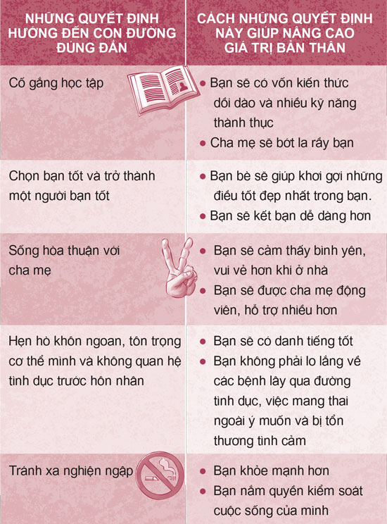
Chiếc gương xã hội nói với bạn rằng giá trị bản thân của bạn đến từ ngoại hình đẹp và sự nổi tiếng. Thật ra, giá trị bản thân lành mạnh đến từ phẩm chất, năng lực và những lựa chọn khôn ngoan. Trong truyện
Harry Potter và Phòng chứa Bí mật
, thầy Dumbledore đã nói:
“Harry ạ, khả năng rất quan trọng, nhưng chính những quyết định của chúng ta mới cho thấy chúng ta thật sự là ai.”
Chinh phục gã El Guapo trong bạn!
Three Amigos (tựa tiếng Việt: Ba người bạn ) là một trong những bộ phim tuyệt vời nhất mọi thời đại. Phim nói về trận chiến giữa những người hùng và một tên tội phạm điên rồ tên El Guapo. Trong một cảnh phim, một trong ba người bạn đã cố gắng vận động dân làng đứng lên chống lại gã El Guapo: “Về mặt nào đó, tất cả chúng ta đều sẽ có lúc phải đối mặt một tên El Guapo. Đối với một số người, tính hay mắc cỡ chính là tên El Guapo. Đối với một số người khác, việc không được học hành đến nơi đến chốn chính là tên El Guapo. Còn đối với chúng ta lúc này, El Guapo là một gã to con nguy hiểm muốn tiêu diệt chúng ta”.
Trong quá trình xây dựng giá trị bản thân, tất cả chúng ta đều phải chinh phục một gã El Guapo. Vậy gã El Guapo của bạn là gì? Dưới đây là ba gã El Guapo mà các bạn trẻ thường gặp:
• Làm thế nào để xây dựng giá trị bản thân nếu tôi nghĩ mình không đẹp?
• Tôi phải làm gì khi liên tục bị chửi bới, hiếp đáp và chọc ghẹo?
• Làm thế nào để vượt qua chứng trầm cảm?
LÀM THẾ NÀO ĐỂ XÂY DỰNG GIÁ TRỊ BẢN THÂN NẾU TÔI NGHĨ MÌNH KHÔNG ĐẸP?
Đây là câu hỏi của một bạn trẻ người Israel tên Rotem. Tôi sẽ trả lời câu hỏi này bằng cách kể lại câu chuyện về một phụ nữ Israel khác, người cũng từng có cảm giác giống Rotem khi bà còn ở tuổi teen. Bà ấy tên là Golda Meir.
Tôi chưa bao giờ được xem là một cô gái xinh đẹp cả. Khi tôi đã đủ lớn để hiểu được tầm quan trọng của ngoại hình, mỗi lần soi gương tôi đều biết mình sẽ không bao giờ trở nên xinh đẹp. Những lúc như thế, tôi lại cảm thấy vô cùng buồn bã. Thế rồi tôi đã tìm thấy sứ mệnh đời mình và kể từ đó tôi không còn quan tâm đến việc mình có xinh đẹp hay không nữa. Rất lâu sau đó tôi mới nhận ra việc có ngoại hình bình thường thật ra là “trong cái rủi có cái may”. “Vận rủi” này đã buộc tôi phải phát triển nội lực của mình. Tôi đã hiểu ra rằng những người phụ nữ không thể dựa dẫm vào sắc đẹp của mình mà phải tự nỗ lực vươn lên thật ra cũng có lợi thế riêng.
Golda Meir đã trở thành vị nữ thủ tướng đầu tiên của Israel và được xem là một trong những nhà lãnh đạo tuyệt vời nhất mọi thời đại. Vậy Golda đã xây dựng giá trị bản thân của mình bằng cách nào? Bà ấy đã tìm ra điều bà ấy muốn làm trong đời và kể từ đó đối với bà, nhan sắc không còn quan trọng nữa. Bạn cũng có thể làm được như vậy. Một khi bạn biết được bạn muốn làm gì với đời mình - những mục tiêu, ước mơ và mục đích của bạn - bạn sẽ được tiếp thêm năng lượng và không còn bị ám ảnh về ngoại hình của mình nữa.
Gần như mọi bạn trẻ tôi biết đều mơ ước trở nên xinh đẹp, hấp dẫn hơn hoặc có thể thay đổi một điều gì đó ở bản thân. Tôi vẫn thường nghe những câu đại loại như:
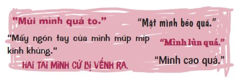
Trang TRU.com đã tiến hành một cuộc khảo sát các bạn trẻ với câu hỏi: Nếu có thể, bạn muốn thay đổi điều gì nhất ở bản thân?
BẠN SẼ THAY ĐỔI ĐIỀU GÌ Ở BẢN THÂN?
1. Ngoại hình đẹp hơn
2. Học giỏi hơn
3. Tự tin hơn
4. Chơi thể thao giỏi hơn
5. Có bạn trai/bạn gái
6. Nổi tiếng hơn
7. Siêng năng hơn
Không có gì ngạc nhiên khi mong muốn có ngoại hình đẹp hơn chính là câu trả lời được lựa chọn nhiều nhất. Nếu bạn vẫn chưa hài lòng với vẻ ngoài của mình, hãy nỗ lực hết sức để trông xinh đẹp nhất có thể và tận dụng những nét đẹp tự nhiên bạn may mắn có được. Hãy để ý xem bạn hợp với quần áo màu nào, hãy giữ gìn vệ sinh cá nhân thật tốt và tìm một kiểu tóc phù hợp với bạn. Hãy quý trọng những nét đẹp sẵn có của bản thân. Thật ra, mỗi người đều có một nét đẹp riêng - bạn có thể có đôi mắt xanh sáng lấp lánh hay đôi mắt nâu giàu tình cảm, một chiếc mũi nhỏ xinh xắn hay một chiếc mũi cao nổi bật, một chiếc cằm thanh mảnh, đôi gò má cao, vành tai thanh lịch, những ngón tay duyên dáng, bờ vai rộng, bắp chân cuồn cuộn cơ bắp, hàng mi dài, đôi môi đầy đặn hay cặp mông săn chắc.
Nhà văn Susan Tanner, người từng cảm thấy rất tự ti hồi còn đi học vì bị mụn nặng, không bao giờ quên bài học mẹ bà đã dạy bà: “Con phải làm mọi thứ có thể để ngoại hình của con trông ưa nhìn nhất, nhưng ngay khi con bước ra khỏi cửa, hãy quên bản thân đi và bắt đầu tập trung vào người khác”. Đây là một lời khuyên rất hữu ích cho tất cả chúng ta.
Hãy nhớ, nếu bạn cứ mãi nhìn vào chiếc gương xã hội, bạn sẽ luôn cảm thấy mình thua kém người khác; còn nếu bạn nhìn vào chiếc gương sự thật, bạn sẽ nhận ra vẻ đẹp bên trong quan trọng hơn vẻ đẹp bên ngoài rất nhiều.
Audrey Hepburn là một trong những nữ diễn viên Hollywood có nét đẹp thanh lịch và gợi cảm. Bà nổi tiếng nhờ vẻ đẹp và phong cách thời trang của mình. Bà đã chia sẻ các bí quyết làm đẹp sau đây.
Bí quyết làm đẹp
Để có đôi môi quyến rũ, hãy nói những lời tử tế.
Để có đôi mắt đáng yêu, hãy tìm những điểm tốt đẹp ở người khác.
Để có dáng người thanh mảnh, hãy chia sẻ thức ăn với những người đói khổ.
Để có mái tóc đẹp, hãy để trẻ nhỏ luồn tay vào tóc mỗi ngày.
Để có dáng đi duyên dáng, hãy bước đi với niềm tin rằng bạn không bao giờ phải đi một mình.
Ai trong chúng ta cũng cần được phục hồi, làm mới, hồi sinh, cải tạo và cứu rỗi.
Đừng bao giờ cho bất kỳ ai ra rìa.
Vẻ đẹp của một phụ nữ không nằm ở quần áo cô ấy mặc, dáng vóc của cô ấy hay cách cô ấy chải tóc.
Vẻ đẹp của người phụ nữ phải ánh lên từ trong đôi mắt của cô ấy.
Bởi đôi mắt chính là cửa ngõ tâm hồn, nơi cư ngụ của tình yêu.
- Sam Levenson
Nhà văn Neal Maxwell đã nhận thấy:
“Chẳng phải sẽ rất thú vị sao nếu vẻ đẹp tâm hồn của con người được bộc lộ hết ra ngoài? Nếu vậy, chúng ta sẽ biết được ai là những người thật sự xinh đẹp trên đời này.”
Bạn sẽ chết trước khi gầy như mong muốn
Chúng ta hoàn toàn có quyền mong muốn có ngoại hình xinh đẹp và cảm giác hài lòng về bản thân, nhưng xin bạn đừng đẩy mọi việc đến mức cực đoan.
… Tôi đã thử nôn thức ăn ra… Tôi đã nghĩ mình có thể nôn như thế bao nhiêu lần cũng được. Nếu tôi lỡ ăn phải một món nằm trong danh sách “thức ăn có hại” của mình, tôi có thể tống mớ thức ăn này ra. Tôi có một nỗi sợ vô lý là nếu tôi bắt đầu ăn, tôi sẽ không dừng lại được và sẽ ăn cho đến khi trở nên khổng lồ. Tôi nghĩ nếu tôi đạt một mức cân nặng nhất định thì tôi sẽ cảm thấy an toàn và có thể chấm dứt nỗi sợ này. Lạ lùng thay, tôi chưa bao giờ thấy hài lòng về cân nặng của mình cả.
Đây là cách nghĩ của một bệnh nhân mắc chứng rối loạn ăn uống. Chứng rối loạn ăn uống được định nghĩa là một thói quen ăn uống gây tổn hại cho bạn cả về thể chất lẫn tinh thần. Ba dạng phổ biến của chứng rối loạn ăn uống là chứng biếng ăn tâm thần (anorexia nervosa), chứng cuồng ăn vô độ sau đó tự kích thích để ói ra (bulimia nervosa) và chứng cuồng ăn mất kiểm soát (binge eating disorder). Có hàng chục ngàn bạn trẻ đã chết hoặc đang gặp nguy hiểm bởi các chứng rối loạn này. Thực tế, chứng biếng ăn là chứng rối loạn tâm lý có tỷ lệ tử vong cao nhất trong tất cả các chứng rối loạn về tâm lý.
Có hàng triệu bạn trẻ mắc chứng rối loạn ăn uống. Có thể một người quen nào đó của bạn hoặc chính bản thân bạn cũng đang mắc một dạng nào đó của chứng bệnh này. Chứng rối loạn ăn uống xuất hiện ở cả nam lẫn nữ, không phân biệt giàu nghèo hay tuổi tác. Nhưng đối tượng dễ mắc phải chứng rối loạn này nhất chính là các cô gái trẻ. Chứng rối loạn ăn uống có thể diễn biến âm thầm suốt nhiều năm. Khi các bệnh nhân bị nghi ngờ đang mắc bệnh, họ thường sẽ phủ nhận và vì thế mà không được chữa trị đến nơi đến chốn. Có rất nhiều nguyên nhân gây bệnh, bao gồm các vấn đề liên quan đến gia đình, chứng trầm cảm, tình trạng bị lạm dụng tình dục hay nỗi ám ảnh về thân hình mảnh khảnh.
Bạn là một người trẻ với tương lai rộng mở phía trước, vì thế bạn cần có một cơ thể khỏe mạnh và cân đối. Bạn sẽ bị tổn hại rất nhiều nếu bị mất trí, mất phương hướng, bị táo bón, bị teo cơ, nhịp tim chậm thất thường dẫn đến đau tim hay mắc phải chứng rối loạn ăn uống. Đừng để bản thân sa vào lối sống không lành mạnh và trái tự nhiên này. Chứng rối loạn ăn uống rất khó điều trị và có thể kéo dài cả đời. Nếu bạn thật sự muốn giảm cân, hãy tìm đến những phương pháp giảm cân thuận tự nhiên và lành mạnh.
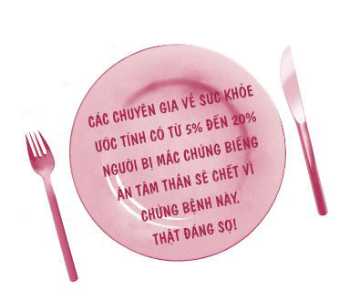
Nếu hiện tại bạn đang mắc chứng rối loạn ăn uống, hãy tìm đến cha mẹ, bác sĩ gia đình hoặc một nhóm hỗ trợ ở địa phương để được giúp đỡ.
TÔI PHẢI LÀM GÌ KHI LIÊN TỤC BỊ CHỬI BỚI, HIẾP ĐÁP VÀ CHỌC GHẸO?
Reese, một bạn trẻ mười sáu tuổi, đang cao hứng kể với bạn bè chuyện cậu đang trượt tuyết thì bị lạc đến khu vực nhảy dù Olympic, nơi người ngoài không được phép vào, thì Brad bỗng ngắt lời cậu.
“Reese!”, Brad quát lớn. “Cậu im miệng đi! Bọn tớ không quan tâm đến câu chuyện chán phèo của cậu! Cậu có biết là cậu nói nhiều quá không?”
Mọi người bật cười còn Reese thì cố tỏ ra bình thản như thể những lời đó không ảnh hưởng gì đến mình, nhưng trong thâm tâm, cậu cảm thấy tổn thương vô cùng. Cậu thấy mình như một đứa ngốc và tự hỏi có bao nhiêu câu chuyện trong số những chuyện cậu ấy từng kể trước đây cũng khiến mọi người ngán ngẩm như vậy.
Sau lần đó, Reese bắt đầu nói năng cực kỳ cẩn thận khi đi chơi với những người bạn đó. Cậu cũng không gọi điện rủ họ đi chơi nữa vì sợ sẽ khiến họ bực mình và không bao lâu sau họ cũng ngừng gọi điện cho cậu. Reese cứ nghĩ: “Nếu muốn đi chơi, các bạn sẽ gọi rủ mình thôi”. Nhưng những người bạn đó không bao giờ gọi cả. Cuối cùng, mối quan hệ bạn bè giữa Reese và nhóm bạn ấy hoàn toàn chấm dứt còn giá trị bản thân của cậu ấy thì bị tổn thương nghiêm trọng.
Những chuyện như thế này vẫn thường xảy ra, đúng không? Một lời nhận xét thô lỗ, một câu nói ác ý hay những chuyện ngồi lê đôi mách - tất cả đều gây tổn thương! Tất cả chúng ta đều phải cẩn thận với lời ăn tiếng nói của mình.
Bạn có thể làm gì nếu bị bắt nạt và đối xử thiếu tôn trọng như vậy? Nếu bạn hỏi những người đã từng chịu đựng nạn bắt nạt và vượt qua được thử thách đó, họ sẽ cho bạn cùng một câu trả lời về vấn đề này. Bridget, học sinh trường Trung học Joliet Township, đã chia sẻ cách cô ấy ứng phó với những lời ác ý.
Hồi còn học lớp Chín, mình không biết cách bảo vệ bản thân. Nếu ai đó nói với mình: “Giày của cậu trông thật quê mùa”, mình sẽ không đáp lại. Mình chỉ ngồi im đó chịu đựng. Thế rồi mình vào cấp ba. Ở trường mới, mình bắt đầu đi chơi với những người bạn tốt và họ đã giúp mình thay đổi theo hướng tích cực hơn. Một trong những người bạn đó chính là Michelle. Cô ấy không quan tâm người khác nói gì về cô ấy. Cô ấy là chính mình. Nếu bạn không thích cô ấy, đó là việc của bạn. Nhờ những người bạn này, mình đã học được cách bảo vệ bản thân và tự tin về con người mình. Giờ đây, nếu có người nói: “Tớ không thích điểm này ở cậu”, mình đã có đủ dũng khí để đứng lên và đương đầu với việc đó.
Đây quả là một lời khuyên khôn ngoan. Quan trọng hơn, nếu bạn biết người khác thật ra dành rất ít thời gian để nghĩ về bạn, bạn sẽ không thèm quan tâm đến những gì họ nghĩ đâu.
LÀM THẾ NÀO ĐỂ VƯỢT QUA CHỨNG TRẦM CẢM?
“Trầm cảm” là một từ đang bị lạm dụng quá nhiều, vậy rốt cuộc “trầm cảm” có nghĩa là gì?
Từ điển American Heritage đã đưa ra hai định nghĩa về “trầm cảm”:
1. Trạng thái xuống tinh thần, chán nản.
2. Mắc phải chứng trầm cảm về mặt tâm lý.
Rachel đã trải qua trạng thái đầu tiên - xuống tinh thần.
Tôi cảm thấy căng thẳng về mọi việc trong cuộc sống. Tôi lúc nào cũng đang lo lắng, xuống tinh thần hoặc kích động. Cảm xúc của tôi cứ lên xuống liên tục! Điều này thật sự khiến tôi lo lắng bởi thỉnh thoảng những cảm xúc tiêu cực của tôi lại gây ảnh hưởng đến những người xung quanh. Chẳng hạn như những khi tôi có tâm trạng tồi tệ lúc ở nhà, tôi có khuynh hướng trút giận lên gia đình mình. Đây là một việc hết sức sai trái, vì thật ra việc tâm trạng tôi xuống dốc không phải lỗi của họ.
Gần như ai cũng trải qua loại trầm cảm dạng này, tức những thăng trầm trong cuộc sống hay cảm giác mà nhiều người gọi miêu tả là chán nản. Có rất nhiều nguyên nhân gây ra cảm giác này: chia tay bạn trai/bạn gái, cha mẹ thông báo gia đình bạn sắp phải dọn đi nơi khác hay đến tối Chủ nhật rồi mà bạn vẫn chưa làm xong bài tập về nhà. Cảm giác này thường chỉ kéo dài trong vài ngày.
Loại trầm cảm thứ hai là trầm cảm tâm lý hoặc trầm cảm lâm sàng, là kiểu trầm cảm nghiêm trọng hơn loại thứ nhất rất nhiều. Loại trầm cảm này không phải căn bệnh có thể được chữa khỏi chỉ nhờ cầu nguyện và đây cũng không phải dấu hiệu của sự yếu đuối. Chứng trầm cảm này xảy ra do các nguyên nhân như sự ra đi của một người bạn hoặc một thành viên trong gia đình, cảm giác cô đơn, căng thẳng, tình trạng bị lạm dụng tình dục, mất cân bằng nội tiết tố, việc lạm dụng chất kích thích hoặc các vấn đề gia đình. Một số triệu chứng của loại trầm cảm này là:
• Những thay đổi đáng kể liên quan đến giấc ngủ, sự thèm ăn và sinh lực
• Mất hứng thú với những hoạt động từng yêu thích
• Cảm giác buồn bã, tội lỗi, không có giá trị, vô vọng và trống rỗng
• Thường xuyên nghĩ đến cái chết hoặc việc tự tử
Nếu bạn gặp phải bất kỳ triệu chứng nào nêu trên, hãy nhớ rằng chúng ta có thể chữa khỏi hoàn toàn căn bệnh này thông qua việc tư vấn tâm lý, áp dụng chế độ dinh dưỡng hợp lý, tập thể dục, uống thuốc hoặc kết hợp tất cả các biện pháp vừa nêu. Thế nhưng, đáng buồn thay, chưa đến một nửa những người bị trầm cảm nhận được sự hỗ trợ y tế và điều trị cần thiết.
Tất cả chúng ta đều có lúc bị bệnh, khi thì cảm mạo, khi thì cảm cúm. Những lúc bị bệnh, chúng ta thường đến gặp bác sĩ. Chúng ta nói chuyện rất cởi mở với bác sĩ về bệnh trạng của mình và dễ dàng nói ra những câu như: “Tôi cảm thấy thật khó chịu”.
Tương tự như vậy, chúng ta cũng có thể mắc các chứng bệnh về cảm xúc hay trầm cảm. Chúng ta phải trải qua một chuyện kinh khủng, thế rồi các hóa chất trong não chúng ta không phát huy tác dụng và chúng ta mất hết hy vọng. Thế nhưng không giống như khi mắc các bệnh thông thường, khi bị trầm cảm hoặc các bệnh tâm lý khác, chúng ta không thích chia sẻ về bệnh tình của mình. Đây chính là một trong những dấu hiệu của bệnh. Chúng ta chần chừ không chịu đến gặp bác sĩ và không chịu uống thuốc. Chúng ta lầm tưởng mình có thể tự hết bệnh. Chuyên gia về sức khỏe tâm thần Sherri Wittwer đã có một kết luận rất hay về việc này:
“Không có gì phải xấu hổ khi mắc một chứng bệnh tâm thần cả. Bệnh tâm thần không có gì khác so với những căn bệnh như hen suyễn hay béo phì. Hầu hết các biện pháp chữa trị đều mang lại hiệu quả, và việc hồi phục là hoàn toàn có khả năng và vẫn luôn có hy vọng.”
Một thanh niên dũng cảm tên Jake Short, người bị mắc chứng rối loạn lưỡng cực, hay còn gọi là trầm cảm thất thường, đã chia sẻ về cuộc sống tựa như ác mộng của mình trước khi anh được chữa trị.
Ngay từ lúc mới đi học, tôi đã gặp rất nhiều khó khăn và đã phải vật lộn chỉ để học tập bình thường. Tôi không hề giao tiếp với bất kỳ bạn nào trong lớp. Năm tôi học lớp Ba, một đêm nọ cha mẹ tôi đã giúp tôi tập viết chính tả. Tôi không thể viết đúng bất cứ câu nào dù có cố gắng thế nào đi nữa. Tôi cảm thấy vô cùng thất vọng, lo sợ và chỉ biết khóc. Dù chỉ mới tám tuổi, tôi đã chạy khỏi nhà vào cái đêm tuyết rơi lạnh lẽo ấy và đi lang thang rất lâu. Cuối cùng, vì quá lạnh nên tôi trở về nhà. Mẹ tôi vừa khóc vừa hỏi tôi điều gì có thể khiến tôi thấy khá hơn. Tôi nói với mẹ: “Con chỉ muốn chết thôi”. Cha mẹ biết ngay tôi đang gặp vấn đề.
Những năm sau đó, tôi đã tiếp nhận liệu trình điều trị của rất nhiều căn bệnh khác nhau, bao gồm hội chứng sợ xã hội (social phobia), hội chứng giảm chú ý (ADD), chứng bồn chồn nghiêm trọng và chứng trầm cảm. Cuộc sống của tôi lúc ấy chỉ toàn xoay quanh những liệu pháp trị bệnh và thuốc men.
Đến năm tôi học lớp Năm và lớp Sáu, bệnh tình của tôi trở nên tồi tệ hơn trước. Tôi thường bỏ chạy khỏi trường trong giờ học, tự làm tổn thương cơ thể mình và lẩn trốn mọi người. Tôi biết những biểu hiện này là không bình thường, nhưng không ai có thể giúp tôi được. Cha mẹ tôi lo lắng cuống cuồng còn bác sĩ thì chỉ biết tăng liều thuốc cho tôi. Tôi thường thức trắng cả đêm vì quá sợ việc phải thức dậy để đi học vào sáng hôm sau. Tôi thường nằm cuộn tròn dưới sàn nhà, tay ôm đầu, khóc và hét lớn: “Thứ đen tối ấy lại ở trong đầu con nữa rồi!”.
Cuối cùng, tôi được đưa đến một cơ sở điều trị mới và vị bác sĩ tâm lý mới đã sửa lại chẩn đoán bệnh của tôi là rối loạn lưỡng cực. Tôi cảm thấy thật nhẹ nhõm khi cuối cùng cũng biết được chính xác vấn đề mình mắc phải suốt mấy năm qua là gì. Bác sĩ cho tôi ngưng dùng thuốc cũ và kê toa mới cho tôi. Sau khi dùng thuốc mới một thời gian, tôi bắt đầu cảm thấy khá hơn và dần tiến bộ hơn. Dù vẫn thấy việc học hành rất khó khăn, tôi đã có thể từ từ giải quyết khó khăn này; tôi bắt đầu cải thiện bản thân và dần quay lại cuộc sống bình thường như bao người.
Khi bệnh tình diễn biến tốt hơn, tôi cũng bắt đầu làm những việc trước đây tôi chưa từng làm, chẳng hạn như việc nói chuyện trước đám đông. Năm tôi mười ba tuổi, khi một dự luật về sức khỏe tâm thần đang được thảo luận, tôi thậm chí đã phát biểu trước các nhà làm luật tại trụ sở Quốc hội. Nhờ câu chuyện của tôi, dự luật này đã được thông qua. Tôi sẽ tiếp tục đứng lên nói về sức khỏe tâm thần và làm bất cứ điều gì có thể để giúp đỡ những người đồng cảnh ngộ. Căn bệnh tôi mắc phải không khác gì so với bệnh tiểu đường. Sự khác biệt duy nhất chính là sự mất cân bằng hóa học của tôi diễn ra trong não, còn sự mất cân bằng của các bệnh nhân tiểu đường diễn ra ở tuyến tụy.
Nếu bạn đang nghĩ đến việc tự tử hay thắc mắc không biết việc bạn sống hay chết có quan trọng gì không, xin hãy lắng nghe tôi nói:
Ngoài kia vẫn còn có người yêu thương bạn. Xin đừng bỏ cuộc. Mọi việc không bao giờ quá tăm tối như chúng ta tưởng đâu. Hãy nói chuyện ngay với một ai đó và giãi bày với họ cảm giác của bạn, giống như cách bạn thường nói khi bị cúm nặng: “Tôi cảm thấy mệt mỏi quá. Bạn có thể giúp tôi được không?”.
Chúng ta có thể gặp đủ mọi kiểu El Guapo, từ việc trải qua nỗi đau khi mất đi một người thân trong gia đình, việc phải cố gắng vươn lên từ nghèo khó cho đến việc vượt qua những vấn đề sức khỏe. Nhưng chúng ta sẽ vượt qua được vì cách giải quyết mọi tên El Guapo đều giống nhau:
TẬP TRUNG VÀO NHỮNG GÌ BẠN CÓ THỂ KIỂM SOÁT, NHÌN VÀO CHIẾC GƯƠNG SỰ THẬT VÀ KHÔNG BAO GIỜ ĐÁNH MẤT HY VỌNG.
NHỮNG CÁNH ĐỒNG KIM CƯƠNG
Cách nay vài năm, trong một bài phát biểu có tiêu đề “Những cánh đồng kim cương” (Acres of Diamonds) của mình, Russell Conwell đã kể một câu chuyện về một người nông dân tên Ali Hafed. Vì không bằng lòng với những gì mình đang có, Ali đã bán nông trại của mình và rời xa gia đình để đi tìm kim cương. Suốt mấy năm sau đó, anh đã chu du khắp Palestine và châu Âu cho đến khi đến được bờ biển Tây Ban Nha. Tại đây, trong tình trạng không một xu dính túi, chán nản và mỏi mệt sau nhiều năm dài tìm kiếm trong vô vọng, Ali đã nhảy xuống biển tự vẫn. Về sau, hóa ra nông trại mà anh bán đi chính là mỏ Golconda, mỏ kim cương lớn nhất trong lịch sử thế giới. Nếu Ali ở lại quê nhà và kiên trì đào bới trên vùng đất của mình, anh đã tìm thấy những cánh đồng đầy kim cương.
Đây cũng chính là cảm nhận của tôi về các bạn - những người đang đọc quyển sách này. Tôi tin rằng bên trong mỗi người các bạn đều đang ẩn chứa rất nhiều tài năng bẩm sinh - những cánh đồng kim cương. Bạn không cần phải tìm kiếm năng khiếu hay tài năng của mình ở bất cứ nơi nào khác. Bạn chỉ cần tìm tòi trên chính “những cánh đồng” của mình thôi.
Bộ phim Vua sư tử cũng có một cảnh phim tuyệt vời thể hiện quan điểm này. Sau khi chúa tể muôn loài Mufasa bị giết, con trai của Mufasa là Simba lên kế vị. Thế nhưng do cảm thấy tội lỗi vì nghĩ mình chính là nguyên nhân gây ra cái chết của cha, Simba đã bỏ trốn khỏi vương quốc và đi tha thẩn cùng những người bạn vô trách nhiệm của mình suốt vài năm tiếp theo. Cậu đã nhanh chóng quên đi trách nhiệm lớn lao và quyền thừa kế ngai vị của bản thân. Một đêm nọ, Simba đã nằm mộng và gặp được cha mình, Mufasa.
MUFASA: Simba, con đã quên ta.
SIMBA: Không, làm sao con lại có thể quên cha được?
MUFASA: Con đã quên mình là ai và vì thế con đã quên ta. Hãy nhìn vào bên trong con, Simba. Con có thể trở nên vĩ đại hơn thế này. Con phải lấy lại đúng vị trí của mình.
SIMBA: Làm sao con có thể quay lại được? Con đã không còn là con của trước đây nữa.
MUFASA: Hãy nhớ con là ai: Con là con trai ta, con là vị vua đích thực. Hãy nhớ con là ai. Hãy nhớ. Hãy nhớ. Hãy nhớ…
Tôi hy vọng bạn cũng sẽ nhớ mình thật sự là ai. Tôi hy vọng bạn sẽ nhớ những điều tuyệt vời bạn đã làm trong quá khứ, chẳng hạn như những lúc bạn nghe lời con tim mách bảo, chinh phục thành công một mục tiêu hay cư xử tử tế với người khác. Tôi hy vọng bạn sẽ nhớ đến những ước mơ mình muốn đạt được. Tôi hy vọng bạn sẽ nhớ bạn là một phần trong đại gia đình nhân loại, cũng như là một thành viên trong gia đình trực hệ của bạn.
Cuối cùng, có lẽ gia đình chính là nơi tuyệt vời nhất giúp ta xây dựng giá trị bản thân. Có thể bạn đang nghĩ: “Anh đùa à? Tôi không thể chịu nổi anh chị em mình còn cha mẹ thì lúc nào cũng la rầy tôi cả”. Tôi thừa nhận đúng là có những gia đình thật sự có vấn đề, nhưng đa phần các gia đình đều tương đối tốt. Bạn có thể thấy mẹ hay chị mình thật phiền phức, nhưng họ là máu mủ của bạn và trong những tình huống sống còn, họ sẽ làm mọi việc có thể để giúp đỡ bạn. Latoya, một bạn nữ đến từ Paterson, New Jersey, đã nói: “Có nhiều lúc bọn con trai khiến bạn cảm thấy mình thật đặc biệt, như thể bạn là người duy nhất họ quan tâm. Rất nhiều cô gái nghĩ đây là cách để lấp đầy những khoảng trống trong lòng. Nhưng mình đã có đầy đủ tình yêu thương từ cha mẹ nên mình không có chỗ trống nào cần được lấp đầy”.
Bạn có biết rõ về dòng dõi nhà mình không? Bạn có thể kể một câu chuyện về ông bà nội/ngoại hay ông bà cố của mình không? Ông bà của bạn là người như thế nào khi còn ở tuổi teen? Tôi chắc rằng trong dòng tộc của mỗi người chúng ta đều có một hoặc một vài người có thể trở thành một tấm gương sáng cho ta noi theo.
Việc tìm hiểu về dòng dõi của mình sẽ giúp bạn cảm nhận rõ lai lịch, nguồn cội và giá trị bản thân. Giống như Simba, bạn sẽ thấy bạn đang thuộc về một điều gì đó vĩ đại hơn bản thân bạn rất nhiều. Bạn cũng sẽ thấy một cá nhân có thể có những tác động to lớn (theo cả hướng tích cực lẫn tiêu cực) như thế nào lên các thế hệ sau.
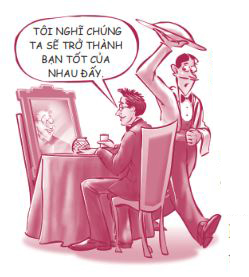
ĐỂ HÀO QUANG CỦA BẠN TỎA SÁNG
Ở đầu chương này, tôi đã dẫn lời của nhà văn Marianne Williamson. Dưới đây là phần còn lại của đoạn trích dẫn ấy.
“Khi sống hèn nhát, bạn sẽ không cống hiến được gì cho thế giới. Việc co rúm lại để người khác không cảm thấy bất an khi ở gần bạn không phải chuyện tốt đẹp. Tất cả chúng ta có mặt trên cuộc đời này là để tỏa sáng, giống như những đứa trẻ vậy. Chúng ta được sinh ra để biểu lộ hào quang của Đấng sáng tạo bên trong chúng ta. Ánh hào quang này hiện hữu ở tất cả mọi người. Khi chúng ta để hào quang của mình tỏa sáng, chúng ta đã vô tình cho phép người khác làm điều tương tự.”
Trong khi một số bạn trẻ có ý thức về giá trị bản thân ngay từ nhỏ, phần lớn các bạn trẻ phải nỗ lực rất nhiều để xây dựng được giá trị bản thân. Có thể bạn phải mất nhiều năm mới biết được mình giỏi việc gì. Bạn sẽ không đơn giản thức dậy vào một buổi sáng và bỗng thấy vô cùng yêu quý bản thân, nhưng tôi chắc chắn với bạn điều đó rồi sẽ xảy ra. Giá trị thật của bạn không liên quan gì đến ngoại hình hay sự nổi tiếng cả. Giá trị của bạn chính là sự thật rằng bạn là một con người, một đứa con của định mệnh với tiềm năng đáng kinh ngạc. Không ai có giá trị thấp hay cao hơn người khác. Tất cả chúng ta đều bình đẳng và tất cả chúng ta đều đáng giá vô cùng! Đó là lý do bạn không cần phải so sánh bản thân với anh chị hay bạn bè rồi cảm thấy bản thân thấp kém hay cao quý hơn họ. Nếu bạn phải niềng răng thì sao? Nếu bạn bị nổi mụn thì sao? Hay nếu bạn dễ xấu hổ thì sao? Mọi việc rồi sẽ tốt đẹp cả thôi. Đừng bao giờ để chiếc gương xã hội tước đoạt mất những món quà độc đáo của riêng bạn, như nhà phát minh vĩ đại R. Buckminster Fuller đã cảnh báo:
“Tất cả trẻ em đều là những thiên tài khi mới sinh ra; nhưng có đến 9.999 em trong số 10.000 em đã bị những người trưởng thành vô tình tước mất tài năng thiên bẩm ngay từ nhỏ.”
Làm thế nào bạn biết giá trị bản thân của mình đang được cải thiện?
• Bạn sẽ bớt lo lắng về những gì người khác nghĩ về bạn.
• Bạn sẽ giúp đỡ mọi người nhiều hơn.
• Bạn sẽ đứng dậy nhanh hơn sau mỗi lần vấp ngã.
• Bạn sẽ thấy thanh thản hơn.
• Bạn sẽ thấy hạnh phúc khi người khác thành công, giống như Cody trong câu chuyện sau đây.
Kiefer vô cùng háo hức muốn kể cho các bạn mình nghe việc cậu đã tập luyện siêng năng suốt ba năm trời và giờ cậu đã lọt vào danh sách vận động viên xuất sắc “Toàn bang”! Cậu không thể tin nổi! Cậu cầm tờ báo có liệt kê tên mình cùng tên của những vận động viên xuất sắc khác và cứ đọc đi đọc lại danh sách ấy để đảm bảo đây là sự thật.
Bất thình lình, một cậu bạn tên Brett giật tờ báo khỏi tay Kiefer. “Ê, đây là danh sách vận động viên xuất sắc toàn bang à? Trường chúng ta có những ai được vào nhỉ?”. Kiefer mỉm cười bẽn lẽn, chờ đợi khoảnh khắc Brett nhìn thấy tên của cậu.
“Cái gì? Cậu được lọt vào danh sách Toàn bang hả Kiefer?”, Brett hỏi với vẻ mặt khó tin. “Thật luôn hả? Tại sao họ lại chọn cậu chứ?”
Kiefer chỉ có thể ấp úng trả lời: “Tớ cũng không biết nữa”. Nụ cười bỗng tắt ngấm trên môi cậu. Cậu cảm thấy mình như một tên ngốc và cảm thấy tổn thương sâu sắc vì phản ứng của cậu bạn. Cậu đã không lường trước phản ứng này của bạn mình.
Tuy nhiên, chỉ vài phút sau, Cody, một người bạn khác của Kiefer, đã biết tin này và phấn khích chạy vào hội trường tìm Kiefer. “Yeah! Xuất sắc toàn bang, Kiefer! Thật tuyệt vời! Cậu xứng đáng lắm, anh bạn à!”. Cody nhấc bổng Kiefer lên và lay mạnh người cậu ấy, cả hai người đều cười thật vui vẻ. Họ đã cùng nhau ăn mừng như những người bạn đích thực và thật lòng thấy hạnh phúc cho nhau.
SỰ LỰA CHỌN MỖI NGÀY
Hãy nhớ rằng mỗi ngày bạn đều phải lựa chọn xem hôm nay bạn có yêu quý bản thân mình không, có ý thức được giá trị của bản thân không. Tôi đã đọc được nội dung này trong mục Dear Harlan (tạm dịch: Harlan thân mến ) của tờ Deseret Morning News :
Harlan thân mến,
Mình là sinh viên năm nhất và mình không biết làm thế nào để trở nên hấp dẫn hơn. Mình bị thừa cân nên mình đang nỗ lực giảm cân và đã đạt được thành công bước đầu. Mình bị rạn da do thừa cân và bị nổi mụn (mình đang điều trị mụn với sự giúp đỡ của bác sĩ da liễu). Mình còn bị sẹo mụn trên mặt và trên ngực nữa.
Mình chưa từng hẹn hò. Mình luôn muốn trở nên hấp dẫn hơn trong mắt người khác. Vậy mình nên làm thế nào đây?
Ký tên
Kẻ giấu mặt
Kẻ giấu mặt thân mến,
Tôi đã làm một nghiên cứu nhỏ hồi cuối tuần này (ở trung tâm mua sắm) và nhận thấy hàng chục cặp có da xấu, bị béo bụng hay bị rạn da vẫn yêu nhau say đắm. Kết luận: Những vết rạn da không hề cản trở bạn hẹn hò, thứ cản trở bạn chính là bản thân bạn! Bạn đã quá quen khước từ bản thân đến nỗi bạn chưa bao giờ cho ai khác cơ hội.
Tôi sẽ chỉ bạn cách lật ngược tình thế: Hãy nỗ lực cải thiện bản thân để trở nên ưu tú hơn. Mỗi tháng hãy học hỏi thêm một kỹ năng hay làm thêm một việc tốt (tập thể dục, tham gia các hoạt động cộng đồng, tham gia công tác thiện nguyện, học cách lắng nghe, v.v.). Trong vòng mười hai tháng, bạn sẽ có thêm mười hai kỹ năng và phẩm chất tốt đẹp. Bạn càng trở nên ưu tú, bạn sẽ càng vui vẻ và mỉm cười nhiều hơn.
Bạn rất hấp dẫn. Bạn xứng đáng với những điều tốt đẹp nhất. Hãy yêu bản thân ngay hôm nay rồi người khác sẽ học được cách yêu thương bạn trong tương lai.
Vậy bạn sẽ chọn con đường nào đây, con đường đúng đắn hay sai lầm? Tôi đề nghị bạn chọn con đường đúng đắn bằng cách nhìn vào chiếc gương sự thật, xây dựng phẩm chất và năng lực, đồng thời chấp nhận việc bản thân vẫn là một tác phẩm đang trong quá trình hoàn thiện.
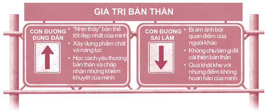
Việc xây dựng được giá trị bản thân tốt đẹp không có nghĩa là bạn sẽ không bao giờ bị tổn thương hay cảm thấy bất an mà đơn giản là bạn sẽ đủ mạnh mẽ để vượt qua mọi khó khăn, thử thách bạn gặp phải trong đời. Hãy sống như một quả đào. Phần thịt bên ngoài của quả đào rất ngon ngọt nhưng phần hạt bên trong lại rất cứng. Đừng e sợ trao đi và nhận lại tình yêu thương, hãy cứ mở lòng đón nhận cả niềm vui lẫn nỗi buồn. Chúng ta có thể bị tổn thương hết lần này đến lần khác, nhưng chúng ta luôn có thể vượt qua nỗi đau và đứng dậy sau mỗi lần vấp ngã bởi chúng ta có nội tâm cứng cỏi, điềm tĩnh không thể bị phá vỡ ở sâu bên trong.
Tôi hy vọng sẽ sớm được gặp bạn trên con đường đúng đắn!
ĐIỀU THÚ VỊ TIẾP THEO
Chương cuối cùng toàn nói về những tên cướp biển và người Hobbit. (Bạn đang nghĩ đây là một sự kết hợp kỳ cục, đúng không?) Chương này cũng khá ngắn. Bạn chỉ cần đọc thêm vài trang nữa thôi là đã hoàn thành quyển sách rồi. Xin chúc mừng!
NHỮNG BƯỚC NHỎ
1. Hãy chép ra giấy những bí quyết làm đẹp của Audrey Hepburn và dán lời nhắc nhở này lên gương của bạn.
2. Lần sau, nếu có ai đó nói chuyện thô lỗ với bạn, hãy đáp trả bằng câu nói nổi tiếng của Coco Chanel: “Tớ không hề quan tâm cậu nghĩ gì về tớ đâu. Tớ còn không thèm nghĩ đến cậu nữa kìa”.
3. Hãy liệt kê những tài năng và kỹ năng giỏi nhất của bạn. Sau đó, hãy thêm vào danh sách ấy một kỹ năng mà bạn đang muốn trau dồi thêm.
Tài năng hoặc kỹ năng mới tôi muốn trau dồi:
_____________________________________________
_____________________________________________
_____________________________________________
4. Lần sau, nếu bạn phạm sai lầm, hãy thử nguyên tắc nhân bốn. Hãy làm bốn việc tốt để sửa chữa, bù đắp cho sai lầm của bạn.
5. Trong năm ngày liên tục, bạn hãy hết lòng giúp đỡ một người đang cần sự giúp đỡ của bạn. Hãy đánh dấu vào ô bên dưới khi bạn hoàn thành nhiệm vụ và để ý xem bạn cảm thấy thế nào nhé.
☐ Ngày 1 ☐ Ngày 2 ☐ Ngày 3 ☐ Ngày 4 ☐ Ngày 5
6. Thành tựu có ý nghĩa nhất trong cuộc đời bạn là gì? Hãy ghi lại cảm xúc của bạn khi đạt được thành tựu ấy.
_____________________________________________
_____________________________________________
_____________________________________________
7. Hãy thử sống chính trực một ngày. Trong suốt ngày hôm ấy, hãy hoàn toàn thành thật trong tất cả mọi việc. Đừng nói dối, lừa gạt, phóng đại sự thật hay nói xấu sau lưng bất kỳ ai. Hãy giữ đúng mọi cam kết của bạn. Hãy để ý xem lối sống này giúp bạn cảm thấy trọn vẹn như thế nào nhé.
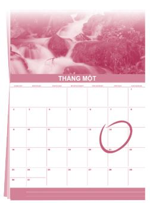
8.
Hãy liệt kê năm mục tiêu trong tương lai của bạn.
1. _________________________________________
2. _________________________________________
3. _________________________________________
4. _________________________________________
5. _________________________________________
9. Trong ba ngày liên tục, hãy để ý xem bạn ăn được bao nhiêu rau củ và trái cây mỗi ngày. Nếu mỗi ngày bạn chưa ăn đủ 500 gam rau củ và trái cây, hãy điều chỉnh chế độ ăn uống của mình.
Lượng rau củ và trái cây
Ngày 1 _____________________________________
Ngày 2 _____________________________________
Ngày 3 _____________________________________
10. Hãy nghĩ kỹ về năm quyết định quan trọng đầu tiên bạn đã đưa ra: Chuyện học hành, Bạn bè, Mối quan hệ với cha mẹ, Hẹn hò và tình dục và Nạn nghiện ngập. Bạn thấy quyết định nào là khó khăn nhất? Từ bây giờ, hãy cố gắng đưa ra những quyết định sáng suốt hơn trong lĩnh vực ấy nhé.
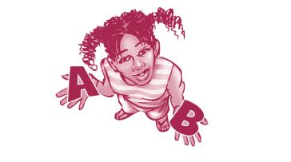
LÀM ĐÚNG LUẬT
Đó là điều xứng đáng để chúng ta phấn đấu
Trong bộ phim Cướp biển vùng Ca-ri-bê , có một cảnh rất hay mà đến giờ tôi vẫn nhớ rõ. Khi mọi việc rơi vào tình trạng hoàn toàn bế tắc, một trong những tên cướp biển đã hỏi thuyền trưởng Jack Sparrow xem họ nên làm gì. Vị thuyền trưởng (người không có gì đáng ngưỡng mộ cho lắm, nhưng đã có một câu nói rất hay!) đơn giản trả lời:
Tên cướp biển ngay lập tức hiểu ý. “Nhất trí, đúng luật!”
Mặc dù tôi chắc rằng thuyền trưởng Sparrow đang nghĩ đến trong đầu một “bộ luật” rất khác, “làm đúng luật” trong quyển sách này có nghĩa là bạn đưa ra những quyết định khôn ngoan trước mỗi ngã rẽ cuộc đời và làm theo những gì mà bạn tin là đúng đắn, ngay cả khi quyết định đó rất khó khăn hoặc hầu như chưa ai làm. Đồng thời, nếu bạn đi sai đường, bạn sẽ nhanh chóng quay lại đúng đường.
Giá mà tôi có thể nói với bạn rằng kể từ giờ, mọi việc trong cuộc sống sẽ diễn ra suôn sẻ. Nhưng tôi và bạn đều biết rõ: Đời không như là mơ. Sẽ có nhiều lúc bạn cảm thấy chán nản và đau khổ vì nhiều lý do, chẳng hạn như khi mái tóc mới cắt trông chẳng ưng ý chút nào.
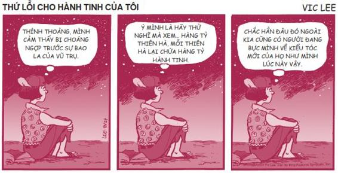
Có những lúc mọi thứ có vẻ như hoàn toàn bế tắc. Trong những tình huống như thế, hãy cứ “làm đúng luật”. Hãy lắng nghe lương tâm mình - thứ lý lẽ bên trong khiến bạn cảm thấy tội lỗi khi xấu tính với một người bạn và thấy ấm áp khi đối xử tử tế với mẹ mình. Lương tâm sẽ đưa bạn đến con đường đúng đắn. Bạn biết rõ điều tôi đang nói, đúng không? Chúng ta hãy nhất trí như thế nhé, hãy làm đúng luật!
Suốt nhiều năm, mọi người vẫn tranh luận với nhau: “Có phải gien di truyền khiến bạn trở thành con người hiện tại? Hay môi trường sống hoặc cách bạn được nuôi dạy khiến bạn trở thành con người hiện tại?”. Câu trả lời của tôi là không có cái nào đúng cả.
LỰA CHỌN QUYẾT ĐỊNH CON NGƯỜI BẠN.
Mặc dù gien di truyền và cách bạn được nuôi dạy có ảnh hưởng sâu sắc đến bạn, nhưng bạn là bạn của hiện tại là do những lựa chọn của bản thân bạn. Lựa chọn quyết định tất cả.
Hãy nhớ, có sáu quyết định quan trọng bạn phải đưa ra trong giai đoạn tuổi teen. Những quyết định này là yếu tố quyết định thành bại trong tương lai của bạn. Bạn được tự do lựa chọn con đường của mình. Tôi hy vọng sau khi đọc quyển sách này, bạn sẽ có thể đưa ra những câu trả lời sáng suốt hơn cho những câu hỏi sau đây:
1. Mình sẽ làm gì với chuyện học hành của mình?
2. Mình sẽ chọn ai làm bạn và mình sẽ trở thành một người bạn như thế nào?
3. Mình có hòa hợp được với cha mẹ mình không?
4. Mình sẽ hẹn hò với ai và mình xử lý vấn đề tình dục như thế nào?
5. Mình sẽ có thái độ như thế nào về việc hút thuốc, uống rượu, sử dụng ma túy, văn hóa phẩm khiêu dâm và các gây nghiện khác?
6. Mình sẽ làm gì để xây dựng giá trị bản thân?
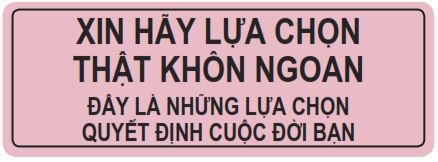
Lựa chọn con đường đúng đắn sẽ giúp bạn hạnh phúc và khỏe mạnh hơn hôm nay, đồng thời được trang bị đầy đủ những yếu tố cần thiết để thành công và hạnh phúc khi bạn hai mươi, ba mươi tuổi và hơn thế nữa. Chẳng phải đây là điều tất cả chúng ta đều mong muốn sao?
Một số bạn có thể đang nghĩ: “Ước gì mình đọc quyển sách này hồi vài năm trước. Mình lỡ đưa ra một số quyết định sai lầm mất rồi”. Bạn đừng lo. Không bao giờ là quá trễ để học hỏi từ những sai lầm của mình và quay trở lại con đường đúng đắn. Tôi xin nhắc lại, cho dù bạn mười lăm, mười chín hay hai mươi lăm tuổi, không bao giờ là quá trễ để bạn thay đổi hướng đi của mình. Nếu bạn xoay chuyển được đời mình, những thử thách trong quá khứ có thể lại trở thành ân huệ lớn lao đối với bạn và những người xung quanh.
Đương nhiên, tốt nhất bạn nên đi theo con đường đúng đắn ngay từ đầu, bởi vì người khôn ngoan sẽ học hỏi từ kinh nghiệm của chính mình còn người khôn ngoan hơn sẽ học hỏi từ kinh nghiệm của người khác. Nếu bạn đang đi trên con đường đúng đắn, hãy đưa tay giúp đỡ người khác để họ cũng làm được như bạn chứ đừng phán xét họ. Hãy động viên, giúp đỡ một người bạn đang có nguy cơ bỏ học hay sắp sa vào con đường nghiện ngập quay trở lại con đường đúng đắn. Biết đâu bạn có thể trở thành người cứu vớt cuộc đời họ thì sao? Hãy sống ĐÚNG LUẬT!
Có rất nhiều sự thù ghét, hành vi bạo lực và những chuyện đau lòng đang diễn ra trên thế giới này và điều đó dễ khiến chúng ta cúi đầu buông xuôi. Nhưng hãy lạc quan lên bạn tôi ơi: Vẫn còn rất nhiều điều tốt đẹp xung quanh chúng ta. Tôi chợt nhớ đến cuộc đối thoại giữa Frodo và Sam - những nhân vật trong bộ phim Chúa tể những chiếc nhẫn - vào thời điểm cả hai đang kiệt sức và sắp mất hết hy vọng.
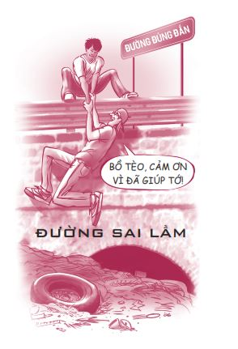
SAM: Mọi chuyện chúng ta đang trải qua giống như tình tiết trong những câu chuyện vĩ đại vậy, cậu Frodo ạ. Ý tôi là những câu chuyện thật sự có ý nghĩa ấy. Những câu chuyện đó chỉ toàn kể về những điều tăm tối và nguy hiểm. Đôi khi cậu còn chẳng muốn biết kết cục của chúng. Bởi vì làm sao những câu chuyện như thế lại có kết cục có hậu được? Làm sao thế giới có thể trở lại như xưa một khi đã có quá nhiều điều xấu xa diễn ra? Nhưng cuối cùng, sự tăm tối ấy cũng sẽ qua. Ngay cả bóng đêm rồi cũng sẽ qua đi. Một ngày mới sẽ lại đến. Khi Mặt Trời mọc, ánh dương sẽ tỏa sáng còn rực rỡ hơn ngày trước. Đó là những câu chuyện cậu sẽ còn nhớ mãi. Những câu chuyện ấy diễn ra là có lý do. Dù thậm chí cậu quá nhỏ bé nên không thể hiểu được lý do ấy.
Nhưng cậu Frodo ạ, tôi nghĩ là tôi hiểu được rồi. Giờ đây tôi đã biết lý do. Những người trong các câu chuyện vĩ đại đó có rất nhiều cơ hội để quay đầu bỏ cuộc, chỉ là họ không làm vậy. Họ tiếp tục tiến lên. Đó là bởi vì họ có niềm tin.
FRODO: Vậy họ tin tưởng vào điều gì vậy Sam?
SAM: Rằng thế giới này vẫn còn rất nhiều điều tốt đẹp, cậu Frodo ạ. Và những điều tốt đẹp ấy xứng đáng để ta tiếp tục chiến đấu!
Tôi hoàn toàn đồng ý. Thế giới này vẫn còn rất nhiều điều tốt đẹp và đó là những điều rất xứng đáng để chúng ta phấn đấu giữ gìn, phát huy. Tôi cũng tin chắc rằng các bạn là những con người tốt đẹp và xứng đáng được yêu thương. Hơn thế nữa, tôi còn cho rằng các bạn chính là thế hệ thanh thiếu niên tốt đẹp nhất từng sống trên Trái Đất này. Đó là lý do vì sao tôi viết quyển sách này.
Chúng ta đã đi đến đoạn kết của quyển sách. Chúc mừng bạn đã đọc xong quyển sách này (hay bạn chỉ toàn xem tranh biếm họa nhỉ?). Tôi xin gửi đến bạn những lời chúc tốt đẹp nhất. Hãy tiếp tục đọc thêm thật nhiều sách nhé. Bạn biết đấy, sách là món ăn tinh thần rất bổ ích. Và đừng bao giờ quên lời nhắc nhở của Haper Lee: